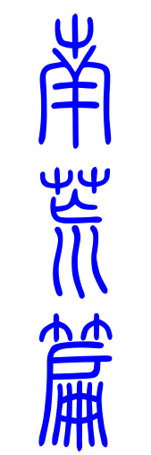
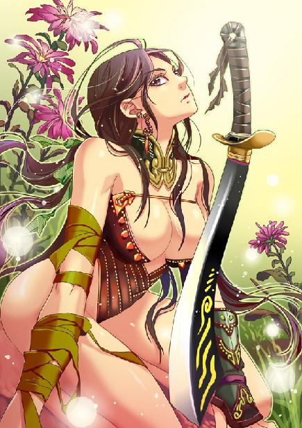
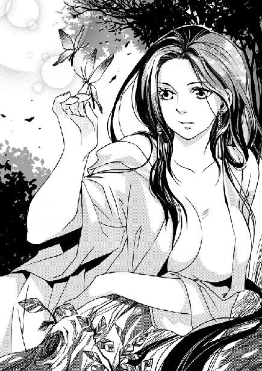
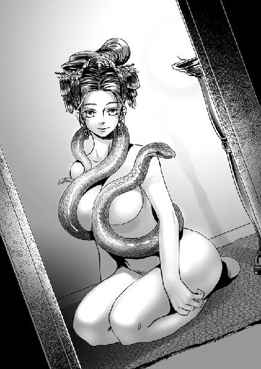

第4集·荒夜蛇村
南荒篇（1/9）
出版日期：2009-11-13
【本集内容简介】
武二郎服下解毒丸，没多久便生龙活虎，嚣张地摆起他二爷的架子。原来找他麻烦的是武二错杀的人前来报仇。
凝羽用两只蝴蝶引程宗扬而来，真的是要教他内功心法？
凝羽仿佛染上了药瘾，服了红色药片，凝羽眼波迷离，阴阳交合之后，程宗扬真的能学到修炼内功的心法吗？
往南荒的路崎岖难行，半路杀出个云氏商会，究竟是敌是友？程宗扬一行人又是否能安然渡过南荒之行的一切劫难？
※ ※ ※ ※ ※

封面人物：凝羽

插图：凝羽

插图：蛇彝女子
山间浓荫蔽日，不时有清泉从岩间淌过，淙淙流往山下，空气仿佛被泉水洗涤过般清新。苍翠的植被沿着山形的起伏勾勒出舒缓的线条，一层层交叠在一起，身后大雪山白皑皑的山脉蜿蜒没入云端，犹如一条虬屈的雪龙。
过了铁索桥，道路渐渐变得平坦。一行人惊魂甫定，又折损了一名兄弟，谁都没有心情说话，唯一的叫嚷声来自身后的马车上：“看着点儿路！颠成这样！还让不让老子睡了！”
武二郎服下解毒丸，蜜罗汁的毒素虽然没有完全清除，精神已经恢复了大半，叫嚷声又变得中气十足，震得人耳膜发麻。
程宗扬一阵头痛。这家伙真够没心没肺的，刚才还和死狗差不多，这会儿一回过力气，立刻又嚣张起来。谁不知道那些刺客是冲着这家伙来的，连累大伙差点送命，连句道歉的话都没有，还摆他二爷的架子。
祁远试探着道：“程头儿？”
程宗扬知道他要说什么，叹了口气道：“武二就这脾气，不用理他。”
祁远笑了笑，“祁老四是个跑腿干活的，大主意你拿。老祁本来也不该说什么，只不过这位姓武的二爷，脾气也太大了。”
吴战威死里逃生，也没有那么多顾忌，接口道：“如果再来一拨，这位爷还是在旁边看笑话，只怕咱们就该打道回府了。”
“哼！哼！”
武二郎耳朵倒尖，两声冷笑传来，然后从车内探出身来，一把抓住吴战威的后颈，像提婴儿一样，把他从马上提了起来。
吴战威反应极快，一把按住刀柄，拔出半截。可没等他出手，武二郎便拧住他的脖子一抖，吴战威如受电殛，长刀“铛啷”掉在地上。武二郎贴在他耳边炸雷般吼道：“叽歪个屁！泊陵鱼家跟二爷有个屁关系！”
程宗扬干咳一声，“二爷，有件事忘了告诉你。昨晚醉月楼鸳鸯阁被杀死的那个，大概是鱼家的人。”
武二郎像看怪物一样看着他。
程宗扬耸了耸肩，“听西门大官人说，好像是他请的客人。”
武二郎脸色由黄转红，由红转白，顷刻间七情上脸，接着暴吼一声扔下吴战威，返身就要回五原找西门庆的麻烦。
“武二！”程宗扬叫道：“别忘了你答应过的话！”
武二郎虎躯一顿，拳头捏得咯咯作响，最后沉着脸钻进车内，吼道：“快些赶路！从南荒回来，二爷还有事要办！”
吴战威灰头土脸地爬起来。他也算把好手，但在武二郎手下却连一招也走不了，这会儿扭伤了大腿，一跛一跛地追上坐骑，再不敢去招惹那头野虎。
程宗扬悄悄透了口气，武二郎这会儿功力已复，若是摆出恶棍的嘴脸耍赖，谁拿他也没办法。他既然能够守信，这让自己松了一大口气。
众人携带的货物不多，路途走起来分外轻松，入暮时分，便赶到山脚。祁远辨认了一下方位，然后招呼着众人进入山林，来到一处空地。进出五原的商旅大都在这里停歇，周围的几棵树木被伐倒，形成一道简陋的栅栏。中间用石头砌成火塘，里面还有篝火的痕迹。
在祁远安排下，三辆马车被放在营地正前方，堵住栅栏。马匹和走骡分别系好，留了几名奴隶看守，防备山中的野兽。吴战威和一名姓魏的年轻护卫拖来一截晒干的枯木，用刀斧劈开，在火塘里升起篝火。行李中带有干粮，几名护卫却贪图野味，跟祁远报备后，结伴到林中打猎。
回去送信的护卫已经快马赶了回来，带来苏妲己的口信，声称武二郎与商馆合作的消息并没有走漏风声，那些刺客只不过是守在桥头，察觉到行旅中有人中了本家的秘制毒物，才出手截杀。既然鱼家的人无一逃脱，就不必再理会，早日赶赴南荒要紧。
“骗鬼啊！”程宗扬才不信这些漏洞百出的说法。
鱼家的人有本事隔着一座桥分辨出谁中了毒？他用脚后跟都能猜到，那些人绝对是西门庆的手下。不知出于什么原因，苏妲己似乎很乐意把赃栽到鱼家的身上，对西门庆只是敷衍了事。
好在现在已经离开五原，那些刺客又死了个干净，在摸清他们的底细前，未必再有人敢来追杀。程宗扬只好这样安慰自己。
掌心传来麻痒的感觉，程宗扬摊开手，只见掌心划破的伤口已经愈合大半，只余下一抹微红的血痕。
刚才遇袭时，一共有三道死气透过生死根进入体内。虽然已经不是第一次感受死亡的气息，但那种冰凉阴森的寒意仍让他很不舒服。
第一道死气来自最初被射杀的护卫，他的气息与左武军的士卒差不多，并不是很强烈。另外两道则是那个持斧的大汉和使剑的男子，丧命时散发出的死亡气息要浓烈得多。其他四名刺客都是在山谷中摔死，离得太远，并没有捕捉到他们死亡的气息。
那些阴森而诡异的死亡气息让程宗扬发慌。他不知道该怎么处理这些来自于死人的气息，只好还是用王哲筑下的基础，让它们旋转着融入腹内的气轮，一点一点地化入丹田。
安抚了那些死气，程宗扬拖着被马鞍磨得僵痛的大腿，蹒跚地在树边坐下，无限怀念起原来世界的摩托车。如果有一辆哈雷，何必骑马这么辛苦。如果可能，再有一辆山地越野车，这段路走起来会和旅行一样轻松惬意。
揉着大腿发僵的肌肉，程宗扬回想起这些天所遇到的种种危险：草原上两军的厮杀，月霜在自己的军营里遇刺，戈龙滴血的眼睛，孙疤脸的死，太乙真宗内部的暗杀，还有刚才经历的行刺……
这是一个用力量说话的世界啊。
模糊中，程宗扬隐约看到这个世界的真实面目：拥有力量者将成为主宰，无力者只能沦为鱼肉。如果有足够的力量，自己就不至于眼睁睁看着王哲化为燃烧的光芒，更不会落到苏妲己那妖妇手中，成为她的奴隶。
一阵肉香飘来。护卫们从山林中猎了头鹿，在溪水中剥洗干净，架在篝火上烤得金黄。祁远看火候差不多了，便拿出盐巴、酱料抹在上面，两手交换着来回翻烤，浓郁的肉香在林中飘散开来，令人垂涎欲滴。
一只蒲扇般的大手伸来，毫不客气从祁远手里抢过烤鹿，撕下一条鹿腿，放在口中大嚼起来。
“淡了些，再加点佐料！”
亏得武二郎满口是肉，还能理直气壮说得这么大声。那些护卫一半都是年轻人，早看这家伙不顺眼了，一个个按住刀柄，眼中透出怒火。
祁远挡住众人，息事宁人地笑道：“那就再加些盐，再加些盐。”
一名护卫攀住祁远的肩膀，客气地把他推开，盯着武二郎道：“四哥，这位爷什么来头？”
祁远连忙劝阻，“石刚，别乱来！”
武二郎对那护卫的挑衅视若无睹，狼吞虎咽啃完了鹿腿，抛了骨头，伸手又去撕另一条。
“唰！”
石刚的雁翎刀贴着武二郎的手指直劈下来，那条鹿腿迎刀而断，接着雁翎刀一翻，在鹿腿落地前用刀尖挑住。
武二郎舔了舔手指，若无其事地说道：“孙子，刀不是这么玩的。”
说着他两手一张，右手扣住石刚的脉门，左手在另一名护卫按住刀柄的手上一切，双掌一错便将两柄雁翎刀夺在手中。
武二郎右手一抖，刀尖的鹿腿冲天而起，左手顺势斜抹，将那只烤好的鹿身挑到半空，接着手间暴出两团刀光。鹿肉雨点般从刀光中纷飞而出，整整齐齐掉在地上一片用来裹肉的蒲叶上。
武二郎大模大样地抛下双刀，接住那支刚从空中掉落下来的鹿腿，一边啃着，一边晃晃悠悠地走了，剩下那几名汉子盯着蒲叶上的鹿肉发呆。那些鹿肉每一块的份量都分毫不差，就是用尺量都未必有这么精确。
程宗扬站起来，拍了拍身上的泥土，说道：“二郎既然把肉给大伙切好了，大伙就赶紧吃吧。吃饱了明天好赶路。”说着捡了块鹿肉咬了一口，赞道：“祁老四烤肉的手艺真不错！大家都尝尝！那边的——”他指了指那些奴隶，“你们也都来尝尝。”
那些护卫虽然失了面子，但都被武二郎的刀法镇住，谁也不敢作声。
祁远悄悄对程宗扬竖起了大拇指。走南荒是刀头舔血的生意，有武二郎这样的强手一道走，大伙儿的性命都多了几分保障。别说他是二爷，就算他是大爷也认了。
※ ※ ※ ※ ※
“二郎。今天多亏了——”
看着武二郎的脸色，程宗扬满脸堆笑道：“那位不知名的女侠。现在身上感觉怎么样？好些没有？”
武二郎用牙齿撕扯着鹿肉，用力吞下一口，然后沉声道：“你怎么知道我杀错了人？”
“二郎在醉月楼大展神威，血洗鸳鸯阁，小弟正好就在楼下。西门大官人吓得屁滚尿流，在小弟的房间躲了一晚。”
武二郎脸色一沉，寒声道：“你跟那西门狗贼是朋友？”
程宗扬连忙摇手，“萍水相逢，没有什么交情。”
武二郎盯着他看了半晌，最后重重哼了一声，“等从南荒回来，二爷必定要取了那狗贼的首级。你小心些，若跟那狗贼在一起，别让二爷一时性起，顺手把你干掉！”
程宗扬笑道：“你放心，就算你当着我的面把他剁碎了，我也不会替他皱皱眉头。”
武二郎脸色稍霁，手臂抱在胸口道：“找二爷有什么事吗？”
程宗扬道：“二郎的双刀用得虎虎生威，今日一见让小弟大开眼界……”
“行了，”武二郎打断他的吹捧，直接道：“你这小子是不是看着眼馋，想跟二爷学刀法？”
程宗扬被他揭穿心思，不禁露出一丝傻笑。
武二郎斜眼打量着他，毫不掩饰地露出一丝轻蔑，“玩过刀吗？”
如果水果刀也算的话……
程宗扬老实摇了摇头，“没有。”
“连刀都没玩过，就想跟二爷学？”武二郎打量了程宗扬半晌，最后勉为其难地说道：“看在你叫人给二爷解毒的面子上，二爷就教你两手，大伙算是扯平了。能不能学会，就看你的造化了。”
武二郎出了林子，不多时拿了两柄钢刀回来，也不知道是从谁身上抢的，连鞘插在腰后。
“二爷只教一遍。看清楚了，二爷是怎么拔刀的！”
武二郎反手握住腰后的刀柄，然后双臂一展，犹如大鹏展翅般，两手交叉从身后挥出，接着毫不停顿地向前一抡，刀光一闪就到了程宗扬身前。
凛冽的刀风扑面而来，刀锋仿佛直接劈入眼珠，在距离程宗扬鼻尖不足一毫米的位置陡然停住。程宗扬一动也不敢动，虽然是两把普通的钢刀，但在武二郎手里仿佛活了过来，蕴藏着猛兽般凶猛的力量。
武二郎咧开大嘴，露出一个狰狞的笑容，程宗扬一颗心直提到嗓子眼，生怕这家伙真的一时性起，把自己的脑袋当成颗松果，一劈两半。
“看仔细了！”
武二郎身形一晃，退开丈许，然后猱身向前，右刀从左上到右下斜腕疾劈，左刀则从腰侧挑出，悄无声息地向上抹去。两片刀光一触即收，然后手腕一翻，以肉眼无法看清的速度没入鞘中。
“二爷的刀法一共三十二式，右刀为虎齿，左刀为虎尾，臂为虎扑，足为虎踞，身为虎形。讲究身、形、步、眼与刀势相合，一刀劈出，当者立断！”
说着他抽刀一绞，旁边一株半人高的松树一晃，枝叶扑擞着掉落下来。武二郎双刀齐出，从树中切出尺许长一段树身，由于刀势极快，切断的树身直直掉在下面的树墩上，并未倒下，只是仿佛平空矮了尺许。
这刀法确实很强、很猛、很凶悍。程宗扬满心佩服地小心问道：“这是什么刀法？”
武二郎傲然道：“当然是我白武族第一刀法——五虎断门刀！”
五虎断门刀，五虎断门刀，断门刀，刀，刀，刀……
程宗扬咽了口唾沫，“久闻大名，如雷贯耳。”
武二郎带着几分得意道：“连你也听说过？”
“当然听说过。只是没想到，五虎断门刀会是双刀……”
程宗扬立刻打定主意，武二郎的刀法再强，自己也坚决不学。五虎断门刀也许是江湖中最赫赫有名的刀法，但比它名头更响亮的，是五虎断门刀出世以来就伴随的诅咒——任何一个学会五虎断门刀的好汉，无论他武功多高，名头多响，都无法摆脱配角的身份，而且一部分顶尖高手还会沦为主角的踏脚石。从这个角度来讲，学会五虎断门刀，就等于放弃了自己的大好前途。
程宗扬咳了一声，“练刀先要练功，二郎能不能教我一点练功的方法？”
武二郎露出怪异的表情，“你一点功夫都没学过？”
“没有。”
“一点都没有？”
程宗扬无奈地摊开双手。王哲的确是传给过他九阳神功的心法，不过那些字句分开来他都认识，连在一起就不明白说的是什么了。
见武二郎为难，程宗扬道：“你只要教我一点基本的练法就行，什么穴道、经脉、内功心法……之类的。”
武二郎抓着脑袋，吭哧半天，脸上难得现出一抹朱砂色，最后怒道：“我白武族都是天生神力，谁学过什么狗屁心法！这也不会，那也不会！你还学个屁啊！”
武二郎劈头盖脸训斥程宗扬一通，然后拔起刀，气呼呼地走了。
程宗扬莫名其妙挨了一顿臭骂，差点被他的唾沫星子淹死，半晌才回过神来，冲着武二郎的背影狠狠地比了个中指，用力骂过去，“干！你自己都不会，还叫个屁啊！”
武二郎哼哼两声，只当没有听到。
武二郎这边是没指望了。想等老天也给自己赐点神力，还不如等石头开花还有点盼头。商馆这帮人里会功夫的不少，只不过吴战威那些人的功夫，自己就算学到十成，也不够给武二郎提鞋的。
想来想去，还剩下一个人也许能帮上自己。
※ ※ ※ ※ ※
“凝侍卫长。”程宗扬满面春风地说道。
凝羽对程宗扬奉送的笑脸毫不领情，冷冰冰看着他，一手仿佛不经意地按住刀柄。
对凝羽这种人还是有话直说的好，寒暄、吹捧、套交情什么的，对这座冰山完全是多余。
程宗扬直接道：“我想请凝侍卫长教我一些功夫。”
凝羽眼中露出一丝讥笑的神情，冷冰冰道：“教什么？”
她竟然没有一口回绝？程宗扬精神一振，“比如修炼内功的心法。”
凝羽道：“内功心法是你想学就能学的吗？”
程宗扬早有准备，“我可以和你交换。”
凝羽轻蔑地说道：“你有什么可以跟我交换的？”
“刀法！”程宗扬亮出身后两把钢刀，认真道：“武林绝学！五虎断门刀的刀法！”
洛克菲勒曾经说过，即使把他扒光衣服扔到沙漠里，只要能遇到一支商队，他仍然可以变为亿万富翁。程宗扬现在的情况跟他所说的差不多，虽然衣服还留着，其他也不比两手空空好多少。既然自己现在冒充的身份是商人，那就像个商人一样，依靠交换与流通来获取自己想要的东西好了。
“凝侍卫长也是用刀的，学会五虎断门刀必定是如虎添翼。”说着程宗扬双手交叉握住刀柄，“锵啷”一声，从腰后拔出双刀。
只这一招拔刀，程宗扬就练了半个时辰。他没有武二郎那么好的柔韧性，能直接双臂后张，拔出刀后就往前抡出，只好把一个动作分成两半，先拔刀，再出刀，气势更是跟武二郎差了十万八千里。
凝羽神情不变，眼睛却微微亮了一下。
“你没学过刀吧。”凝羽淡淡道：“连握刀的姿势都不对。”
程宗扬面露尴尬，武二这厮根本不算个好老师，只顾着自己摆酷耍威风，连怎么握刀都没教他。
“还有呢？”
程宗扬模仿着武二郎的招术，右刀斜劈，左刀上抹，姿势虽然差了几分，但苦练之下好歹有点成绩，勉强算是似模似样。
凝羽可比程宗扬识货太多了。程宗扬一摆出架势，凝羽就知道这个笨蛋没有说谎。
“你想学什么？”
“内功的心法。”
凝羽沉默半晌，然后道：“我的功法和别人都不一样。你听好了：浑沌初始，是为太一。”
“等等，什么太一？”
“天地浑沌未明，阴阳合而未分，称为太一，是万物的本源。这种功法就是融合阴阳，从万物的运行中，寻找天地间最本始的力量。”
凝羽张开手，林叶间流淌下的月光在她如玉的掌心凝结，变成一道犹如实质的光盾。
程宗扬瞪大眼睛，“这就是你的功法吗？”
“不。”凝羽皓腕一旋，那层光盾仿佛凝结在她掌上，利刃般的削断旁边一根树枝。
树枝平整的断口上有淡淡的光芒闪烁，程宗扬还以为是留下的月光，仔细看时才发现竟然是一层冰霜凝在上面。
难怪这女人冷冰冰的，原来练的功法这么邪门。等自己练成神功，一掌劈下去，直接把对方冻成冰棍，倒是很省力气。
程宗扬笑逐颜开，“这是什么功夫？”
凝羽摇了摇头，“不知道。”
程宗扬一怔，“不知道？”
凝羽有些不耐烦地说道：“功夫的名字有那么重要吗？你只要跟着修习就是了。”
“先把真气纳入丹田，然后沉下心，感觉天地万物的脉动。然后你会听到月光流动的声音。真气的流转不是没有规律的，它会随着天地、日月、潮汐的盈消而起伏……”
程宗扬听得头大如斗，月光流动的声音？怎么不说月光的味道呢？
“你教我怎么听到月光流动的声音。”
本来很平常的一句话，凝羽冰冷的俏脸却一瞬间涨得通红，眼中透出一股被人羞辱而愤恨之极的杀意。
程宗扬不由自主地退了一步。
凝羽羞怒地瞪了他一眼，然后一言不发地拂袖而去。
程宗扬一头雾水。她怎么和武二郎一样，说翻脸就翻脸呢？武二郎是对内功心法一窍不通，被自己问住而恼羞成怒，她又是怎么回事？
※ ※ ※ ※ ※
祁远安排了人手守夜，护卫和奴隶们分成两处入睡。只有武二郎高卧车上，鼾声如雷，也没人敢招惹这位爷。
程宗扬还在思索着凝羽的话。
天地浑沌，阴阳未分……气入丹田，沉溺凝神……万物脉动，月光……
干！月光怎么会有声音？
琢磨了一个时辰也没有半点心得，程宗扬一阵气闷。反正也睡不着，索性爬起来朝营地外走去。
程宗扬还记得在地牢时那一幕，身体的经络仿佛被点亮，每个穴道都是一个发光的节点，无比清晰地勾勒出真气流转的路径。然而那一幕却如惊鸿一瞥，再也没有出现过。自己就像一个撞上好运的瞎子，莫名其妙地碰上这一幕，然后无论自己怎么努力，都找不到当时的感觉。
王哲只帮他筑下基础，没有来得及告诉他怎么从最基本的方法开始修行。不知道入手修炼的方法，程宗扬空守着九阳神功的宝库，却不知道怎么开门，甚至连门在哪里都不知道。
离营地不远有一道溪水，空气中弥漫着树木青涩的气息，月光落在溪上，仿佛一条蜿蜒流淌的水银。
程宗扬捞了一把，那水很凉，从积雪的山峰流下，仍带着冰雪的温度。他用力洗了把脸，然后昂起头，甩着手上的水珠，呼出胸口的闷气。
程宗扬并不是一个很愿意下苦功的人，如果可能，他宁愿利用自己的知识捣鼓几样小东西，做个不大不小的富翁，轻轻松松过一辈子。但也许在遇见王哲的那一刻，命运已注定自己与轻松无缘。没有足够的实力，自己在这个世界只能是一只朝夕难保的猎物。
置身在荒凉的大山中，穿越前的经历如同自己的前生。那时自己坐在飞往上海的航班上，等待着一份自己并不想要的工作。程宗扬以为自己摆脱了宿命，然而这个世界里，仍不由分说地把许多自己不愿做、也做不好的事强塞给他。
想做什么就做什么，想怎么做就怎么做。如果程宗扬对于这个世界怀有一个梦想的话，这就是他的梦想。但想要走到那一步，至少也要有凝羽或者武二郎的实力。
程宗扬甩了甩头，把这些烦心事抛在脑后。
忽然，一大一小两只蝴蝶从幽暗的林中飞出，带着朦胧的光辉，一瞬间就吸引了程宗扬的目光。它们通体莹白，额头那对触角光华流溢，团扇般的双翼仿佛透明的月光，上面有着精致的花纹，翼尖摇曳着，洒下星星点点细碎的辉光，在叶间翩然飞舞。
程宗扬从来没见过这么奇异的蝴蝶。它们似乎丝毫不怕生人，越飞越近，最后停在程宗扬手边一株不知名的小花上，合起莹润的双翼。
程宗扬好奇心起，悄悄解开衣服，猛地把两只蝴蝶整个罩住。他怕弄伤了这两只奇妙的蝴蝶，小心翼翼地包紧衣物，然后揭开一线。忽然白光一闪，两只蝴蝶从衣物细小的缝隙间飞出，翩然远去。
看到两只蝴蝶没有受伤，程宗扬松了口气，但让它们就这么飞走，又有些不甘心。程宗扬拎起衣服，朝前追去。
那两只蝴蝶飞得并不快，流光溢彩的双翼舞动着，在黑暗中划出两道莹白的光弧，轻盈地飞入密林深处。
程宗扬一路追赶，不知不觉远离了营地。两只蝴蝶的速度慢了下来，最后飞到一棵巨大的银杉树后，在枝叶间盘旋飞舞。程宗扬放慢脚步，轻手轻脚地向银杉靠近。
忽然一只洁白的手掌从幽暗的光线中伸出，纤指微微挑起，那两只蝴蝶收敛双翼，落在那只纤美的指尖上。
一束月光透入密林，映出一张冰玉般皎洁的面孔。
凝羽侧身倚在银杉的横枝上，指尖挑着两只莹白的玉蝶。她没有披那件黑色的斗篷，贴身的皮甲也已经卸去，只穿了件薄薄的单衣。淡淡的月光落在身上，勾勒出她曼妙的身形。
凝羽幽深的美目凝视着程宗扬，在她冰冷的眼眸深处，仿佛有星光闪烁。
程宗扬没想到会在这里遇到凝羽，不由地停下脚步，脑中紧张地转着念头。
凝羽对男人的厌恶，自己是见识过的。那天当着苏妲己的面玩弄她的身体，还可以说是被逼无奈，但晚上自己接着做过的事，总不免有些趁人之危。
这些天程宗扬一直心怀忐忑，怕凝羽找自己麻烦，一方面又怀着一丝侥幸，想着凝羽当时受药物影响，意识不清，未必知道自己做了些什么。后来两人几次见面，凝羽都没有半点异样，还替他隐瞒阿姬曼的事，让程宗扬以为事情已经过去。现在看来并不是那么简单。
他悄悄看了看四周。周围林木幽静，倒真是个杀人灭口的好地方。
看着他心虚的样子，凝羽平静地说道：“你的巫术呢？怎么不使出来？”
紧要关头，程宗扬反而冷静下来，问道：“如果同样的事情，是夫人让你去做，你会不会做？”
凝羽目光落在指尖，然后呵了口气。那两只蝴蝶的影子微微一晃，化成两抹月光，流水般淌落下来，消散在夜色中。
“我们穹羽族天生就能操纵月光。如果是武二郎，他一眼就能看穿吧。”
程宗扬咳了一声，“你不用测我的底。其实我就是个没用的小商人。”
凝羽抬起眼，“那你的真阳是从哪里来的？”
“真阳？”
凝羽注视着他，忽然抬出腿，从银杉的横枝上跨下。那根横枝离地面足有两米高，她却像从榻上起身一样从容，一步迈到了程宗扬的面前。
“你不知道什么是真阳吗？”
程宗扬记得蔺采泉也曾经说过自己真阳特别浓郁，以至于溢出体外。按照蔺采泉的说法，真阳与平常人身体强壮、阳气旺盛是完全不同的两种概念，还吓唬他那是死人才有的。
蔺采泉并不明白自己的真阳并非依靠苦修，而是通过生死根平空得来，因此疑心自己修炼过某种功法，却不知道运用之法，于是极力游说他加入太乙真宗门下。当时程宗扬只觉得这老家伙有些不老实，借口要留在王哲军中一段时间，而拒绝了他。
现在凝羽也发现他身上真阳浓郁，倒是程宗扬自己没多少感觉。他模仿着武二郎的架式抱起手臂，镇定地微笑道：“我当然知道什么是真阳。但你怎么会以为我身上有真阳呢？”
凝羽微微扬起下巴，“忘了你那天晚上做的好事了吗？”
“咳！咳！”程宗扬狼狈地咳嗽起来。
凝羽踏近一步，“怎么？有胆量做，没胆量承认吗？”
程宗扬指天发誓道：“我不是故意的！事实上，我是看你很难受，才……”
凝羽打断他，“我做得好吗？”
程宗扬没想到她会问出这样直接的问题，顿时噎住了，看她不像是开玩笑的样子，才老实回答道：“超过我的想象。”
凝羽忽然笑了起来。程宗扬从未见过她的笑容，仿佛冰川融化，孤独的百合在清凉的月光下悄然盛开。
凝羽张开手臂，那件长长的衣袍贴着胴体的曲线滑落下来，修长的玉体浸沐在如水的月光中，散发出洁白的光泽。
看到那具光洁的玉体，程宗扬浑身的热血仿佛都涌到下腹，阳具顿时一阵发胀。
凝羽身材高挑，四肢修长，躯体的轮廓曲线分明。虽然已经见过她穿着暴露性感内衣的艳美娇态，但眼前身无寸缕的玉体，仍然带给程宗扬强烈的冲击。她两乳高耸，红嫩的乳尖几乎触到程宗扬的衣服，月光洒在赤裸的乳峰上，在她身前留下深深的阴影。腰身虽然细致，却丝毫没有柔弱感，紧凑的肌肤充满力量。
“我能做得很好。”凝羽说。
她把手伸到程宗扬腹下，抚摸着他发胀的肉棒。那只握惯刀柄的手柔软而又滑凉，轻易就撩拨起程宗扬的欲望之火。
程宗扬忍不住去触摸凝羽的胴体，凝羽却忽然松开手，退后一步。
“答应我一件事。”凝羽看着他说道：“替我除掉她。”
程宗扬一怔，接着反应过来。苏妲己？他的视线从凝羽乳上移开，望向她的眼睛。
凝羽幽深的瞳孔静如止水。
“我不明白。”
虽然凝羽的眼神告诉自己，她并没有撒谎，但程宗扬不明白，身为苏妲己的侍卫长，她为什么会想要除掉自己的主人？更不明白凝羽为什么会挑中自己——如果她真想那么做，武二郎会是个更好的选择。
“她知道。”凝羽淡淡笑了起来，“她一直都知道我想杀死她。但我在月亮下发过誓，会用我的生命来保护她。”
程宗扬皱起眉头，“那你还要杀了她？”
“所以，”凝羽平静地说道：“当你出手的时候，要连我一起杀了。”
难道她嗑药嗑傻了？闷了一会儿，程宗扬小心问道：“你是不是在发烧？”
“不相信我吗？”
废话。如果你说这是个圈套，我会更相信你。
“先不说你为什么恨她，”程宗扬摊开手，“你觉得我能打过你吗？”
“用你的巫术，”凝羽道：“也许可以。”
看来自己擅长邪淫巫术的帽子是戴定了。
程宗扬苦笑道：“你也太看得起我了吧。”
“我那天到天快亮时才清醒过来。”凝羽挑起唇角，“那个淫妇也不比我好多少。自从我来到商馆，还没有见到她那样失态过。你的巫术比你想象的更强。”
对你是用药的好不好？虽然苏妲己把那根按摩棒据为己有，但吃过一次亏，下一次她未必还会上当，而且即使再有一次，按摩棒的电量也不会持续太久。把摇头丸喂给苏妲己吃，程宗扬可没有信心能瞒过她。
“可能你还不知道，那天她本来要杀掉你。在她转身的时候，已经向我们这些侍卫下过令。”
程宗扬脖颈后面一阵发凉，难怪那天苏妲己如此听话，原来是打定主意要杀了自己。
“直到最后一刻，她才改变了主意。”
程宗扬忍不住道：“为什么？”
“因为你的真阳。”凝羽有些叹息地说道：“你以为她会没有发现吗？”
程宗扬苦笑起来，好像除了自己，每个人都知道他身上所谓的真阳。
如果说人体是一座宝藏，真阳就是其中的珠玉。修炼过功法的人，或多或少都会聚炼出真阳。真阳与人体的真元相合为一，成为生命的一部分，修行越深厚的人，生命力就越旺盛。
任何修行的人，都不会允许、也不可能让自己的真阳外溢。正如蔺采泉曾经说过的那样，只有散功和临死的时候，才会出现真阳溢出的状况。但程宗扬是个例外，当日那场大战，他吸收了过多的死气，这些死气通过生死根转化为生气，再经过丹田气轮的旋转，凝聚为真阳。程宗扬的丹田内根本无法容纳这样多的真阳，他又不知道储藏运用的方法，就像个挥霍无度的败家子一样，让那些足以令任何人眼红的真阳随意流失。
“她看你奇货可居，才给你下了冰蛊，想查出来你究竟是什么来历——不用惊讶，”凝羽说：“我也没想到自己会与你这样的废物合作。”
“废物？喂，虽然我脾气不坏，可我也是个自尊心很强的人，你这样说不觉得很不给我面子吗？”
凝羽毫不动容地看着他，显然不怎么在乎他的面子。
程宗扬泄了气，“算了。既然我们是合作关系，大家就不用虚伪了。那天晚上你我都很爽，要不要再来一次？”
说着他伸出手，不客气地捏住凝羽的雪乳。凝羽本能地退缩了一下，然后鼓足勇气，挺起双乳，身体微微颤抖。
凝羽的乳房不像阿姬曼那么柔软，白嫩的圆乳高高耸起，坚挺而充满弹性，乳头和乳晕小巧红润。程宗扬捏住乳头，在指间揉动，那粒柔韧的乳珠在他手指间慢慢膨胀着挺立起来。
程宗扬忽然道：“你对男人的讨厌都是假的？”
凝羽吸了口气，微微战栗着道：“男人的气味让我觉得很脏，很恶心。”
“那你为什么……”
凝羽眼神中流露出一丝嘲讽，似乎在嘲笑面前的男人，又似乎在嘲笑自己，“因为我也很脏。”
她抚住程宗扬的阳具，低声道：“把你肮脏的精液射进来，我会让你快乐。”
当凝羽卸去冰冷的面纱，肉体变得像水一样温柔。她赤身躺在草地上，修长的双腿弯曲着分开，光洁的胴体犹如美玉一样莹白。在凝羽腹下，她女性的骄傲像一朵柔艳的花朵，带着诱人的光泽和气息，红红的，在月光下柔柔绽开。
“用你的巫术……”
失神中，程宗扬耳边飘来凝羽细微的呢喃声。
程宗扬脑中刹那间光亮一闪，段强随身带的药品绝不仅仅是摇头丸。凝羽昨天已经找过自己一趟，今天又用月光凝成的蝴蝶引来自己，显然是和香蔻儿一样春心萌动。她现在的表现明显有药物成瘾的症状，但即使凝羽的抵抗力再弱，也不大可能因为一粒摇头丸就成瘾，原因只可能出在那种红色的药片上。
“闭上眼睛。”程宗扬道。
凝羽闭上眼睛。程宗扬打开背包，拿出那只装满药丸的瓶子。瓶盖一打开，一股淡淡的香气便飘散出来。闻到麻古特有的气息，凝羽身体顿时一颤，更证实了程宗扬的猜测。
程宗扬拿出一片红色的药丸，掰开一半，想了想又掰下一半，只剩四分之一大小，然后放到她唇边，命令道：“吃下去。”
凝羽犹豫了一下，用舌尖舔住那颗芳香的药丸，咽了下去。
那个奇怪的“咒语”再次响起。时间仿佛有一个时辰那么久，然后凝羽笑了起来。她目光迷离地看着程宗扬，喃喃道：“我在飞翔吗……”
程宗扬刚数到三百，算算时间还不到五分钟。这种红色药片的效力比他想象中还大。想想也是，段强是富家子弟，他用的药物，品质不会差到哪儿去。
这次没有苏妲己在旁观看，凝羽也不像上次那样抗拒。她眼波变得朦胧，红色药片强烈的催情效果，使她很快露湿花心，红润的美穴渗出花汁，变得湿腻起来，仿佛一朵滴水的牡丹，在月光下散发出妖艳的光泽。
程宗扬手指伸到凝羽下体，指尖一滑，便没入她紧窄的穴口。凝羽的蜜穴立刻抽动起来，仿佛一张湿腻的小嘴含住指尖，来回舔舐。
程宗扬拔出手指，托起她的脚踝扛在肩上，阳具挤开阴唇，往前一送，轻易就插到根部，身体撞在凝羽的臀肉上。
高大的银杉下，月光如水一样透过枝叶，淌在地上。月色下，青绿的草地呈现出一片淡黑色的阴影，草地上的胴体却洁白如玉。凝羽的皮肤很光滑，有着玉一样滑凉的触感，体内却一片炽热。当程宗扬进入时，凝羽下体多汁的蜜肉立刻裹住阳具。柔腻而湿滑的美穴抽动着收紧，挤出一股温暖的汁液。
出乎程宗扬的意料，凝羽很快就主动挺起下腹，迎合着他的抽送。她的动作虽然没有阿姬曼那样摇曳生姿，却明显有更多的经验。当他进入时，凝羽下体柔媚地挺起，拔出时，凝羽腰肢轻扭，从蜜穴中退出肉棒。无论是节奏还是韵律都巧妙之极，让程宗扬不仅节省了一半的力气，交合间的快感更是妙不可言。
凝羽白美的双腿搭在程宗扬肩上，臀部微微翘起，随着肉棒的进出，红嫩的性器在雪臀间不住翻卷。清亮的淫液从穴中淌出，落在臀下的草叶上，拖出一条银亮的丝线。
程宗扬只觉那只柔腻的嫩屄越来越紧，阳具在其中进出摩擦时，酥爽的感觉从龟头顺着脊柱一直延伸到脑后，畅快之极。没插几下，就有种射精的冲动。
程宗扬放慢速度，一边开始念诵“咒语”——其实是在数数，免得自己刚插几下就一泄如注，太过丢脸。
程宗扬一边计数，一边换成九浅一深的节奏，不再一味狂冲猛进。身下，凝羽的脸色越来越红，虽然还随着他的节奏举臀迎合，腰肢却越来越绵软。她眼波如水，身体仿佛一片波浪般翻滚的云涛，柔软得让人不愿离开。
当程宗扬数到一千的时候，凝羽忽然颤声道：“用力插进来！”
程宗扬挺身而入，怒胀的肉棒全部没入凝羽体内，蜜穴尽头，一团柔滑的嫩肉微微鼓起，嫩肉中间一个小小的凹处迎向龟头，浅浅套在肉冠的马眼上。
学过生理课的程宗扬当然知道那是女性的宫颈入口，位于阴道尽头。但由于阴道具有弧度，一般的性交姿势，男性很少能碰触到女性的宫颈。以往和紫玫做爱，紫玫就最怕他采用背入式，因为那种姿势最便于阳具深入阴道尽头。每次程宗扬顶到花心，紫玫都会发抖，埋怨说被他干得发痛，搞完就会软得像一摊泥。
程宗扬没想到凝羽会主动献出花心，看她满脸红晕、媚艳欲滴的样子，多半是情欲高涨，才甘愿献出花心让自己来干。他俯身压住凝羽圆润的大腿，阳具一阵猛干，每一下都顶在凝羽的花心上，直干得她娇躯乱颤，穴中淫液泉涌。
忽然，一股冰凉的寒意从花心涌出，带着一股邪恶的气息侵入程宗扬体内。程宗扬的“咒语”声一断，本能地屏住呼吸，拼命勃起阳具，压下那股寒意，仍禁不住打了个哆嗦。
这次凝羽服下的药物份量小了许多，虽然身体反应明显，神智却比上一次清楚得多，迷离的眼神中露出一丝讶色。
程宗扬喘了口气，疑惑地问道：“你身体里怎么这么凉？”
凝羽身体一僵，停住动作，玉齿慢慢咬住唇瓣。
过了一会儿，凝羽忽然道：“你不是要学修炼的功法吗？我来告诉你……”
按照凝羽的指点，程宗扬试着操控丹田的气旋，将透出的炽热气息顺着阳具送往龟头。就在此时，凝羽的花心中透出一股截然不同的清凉气息。两者在花心与马眼结合的部位一触，便相互缠绕着旋转起来。
程宗扬脑中轰然一声，眼前仿佛敞开了一扇大门。耳中传来世间万物的奇妙韵律：风声、水声、虫蚁的呼吸声，叶片舒展的微响……还有月光流动的声音。
他终于明白了凝羽为什么会羞怒。
原来是“这样”听到月光流动的声音。
※ ※ ※ ※ ※
炽热的阳气从丹田透出，旋转着源源不绝地进入凝羽体内。那晚在水牢中突然产生的内视再度出现，并且延伸到身下的肉体内，将凝羽的经脉一览无遗。
程宗扬惊讶地发现，凝羽的经脉与自己有很大的差异，不仅真气运转的方向迥然相反，数量也似乎多了一对。他的阳气进入凝羽体内，在她丹田中转过一个奇异的弧线，然后反向流出。仔细看时，自己的阳气是炽热的白色，而凝羽的气息却是淡淡的黑色，两者交汇成一个太极的图案。这太极的阴阳交汇并非平面，而是立体的，随着阳气的进入，变成一个旋转的球形。白色的阳气与淡黑的阴气相互交融，又泾渭分明，阴中有阳，阳中有阴。
阳气通过凝羽的丹田，变成反方向旋转的阴气，重新流入自己体内。经过这一番流动，即使程宗扬还是个菜鸟，也能体会到经过交融的真气变得愈发精纯。与此同时，容纳了阴气的气轮也愈发旺盛起来。
凝羽下体微微一动，用蜜穴套弄起穴内的肉棒。程宗扬拉住她的双腿，朝两边张开，然后挺动起来。
龟头虽然离开花心，真气的交流却没有断绝，反而随着阳具在蜜穴中的进出变得更加澎湃。程宗扬越干越是顺畅，真气潮水般涌入凝羽体内，在她丹田中转化后，再重新汇入自己丹田之中。每一次抽送，都能明显感觉到丹田内气轮的膨胀和滋长。
不知过了多久，气轮的膨胀已经达到极限，再干下去只怕就会爆裂，程宗扬这才慢慢减缓速度。
凝羽下体已经湿泞一片，臀间湿淋淋满是淫水。下体传来的快感使她已经无力挺动腰肢迎合程宗扬的进出，只能张开腿，将阴户敞露出来，任他抽送。在程宗扬的捣弄下，那柔嫩的花心开始一抽一抽地收缩起来。
就在凝羽达到高潮的同时，子宫深处那团阴寒的气息再次涌出，就像一头恶狼张开阴森的獠牙。
程宗扬用力干了几下，龟头顶在凝羽的花心上，将饱含着真阳的精液深深射进凝羽体内。
山风徐来，树影婆娑。凝羽屈着膝，侧身坐在地上，她双目紧闭，拇指扣住中指，正在行功。她白嫩的屁股被顶得发红，湿漉漉的臀肉上沾着零乱的草叶。药物的效果还没有完全消失，凝羽的面颊上仍留着亢奋的红晕。在她赤裸的肩膀后，那道弯弯的印记仿佛一抹红色的月牙。
长时间的交合并未耗尽程宗扬的体力。虽然刚射过精，有一丝虚脱，体内的精力却极为充沛，与以往那种做完爱困倦得只想睡觉的感觉完全不同。
良久，凝羽吐出一口长气，缓缓睁开眼睛。
程宗扬道：“这就是你教给我的功法？”
凝羽没有回避，只是点了点头。
这就是传说中的阴阳双修吧？程宗扬已经思索了半天，问道：“这种修炼的方法，两个人的进境应该是一样的。但如果双方有一个功力远远超过另外一个，会有什么状况？”
凝羽慢慢抹去身上的污渍，随口道：“功力强的一方如果愿意，在真气交换时会掠走对方的功力。”
“感觉到了吗？”凝羽问道。
程宗扬想了一会儿，忽然道：“那股气息不是你的。”
正在披衣的凝羽顿了一下，“是的。”
“是谁？”
“如果你想知道的话……”凝羽坐直身体，望着程宗扬的眼睛道：“是西门庆。”
“什么！”
凝羽结好衣带，将散乱的长发一一挽起。
“我出生在南方森林里的穹羽族，两年前的一个夜晚，族中的长老让我在月亮下发誓，用生命守护一个我根本不认识的人。后来我才知道，那些天穹羽族唯一的商路被人截断，我是作为人质被送到白湖商馆，换来族人的和平。”
“夫人对穹羽族十分憎恨，也很讨厌我。到商馆没多久，我就被她送给西门庆。按照约定，我陪了他一个月。这些功法都是他在我身上使用过的。西门庆宅里有很多女人，我是陪他最久的一个——他说：我是一个很好的鼎炉。后来他还几次要我，都被夫人拒绝了。”
程宗扬想起那天凝羽见到西门庆的反应。看样子，西门庆仍然对凝羽恋恋不舍。也难怪，凝羽那样熟练的技巧，西门庆那家伙肯定是花了大力气调教过的。接着他又疑窦丛生，苏妲己与西门庆之间的关系，似乎不像表面上看来那么简单。
“西门庆究竟是什么人？”
凝羽摇了摇头，“我只知道他是五原城有名的富商。还有，他的修为远比你想象的要高。我陪了他一个月，再回到商馆，夫人就让我做了她的侍卫长。”
这样说来，凝羽只陪了西门庆一个月，修为就大有进境。程宗扬小心问道：“那股寒气也和西门庆有关吗？”
“那就是他留在我身体里面的。”凝羽平静地说道：“他每次修完功法，都会把多余无用的杂气像扔垃圾一样，留在我身体里。而且他还说过，和他交合过的女人，都不会再想和别的男人欢好。”
凝羽笑了起来，低声道：“他没想到会有人使用南荒的巫术。”
当程宗扬饱含真阳的精液射入体内，无形中把纠缠在子宫里的寒气化解了许多。那些寒气不仅抑制了她的性欲，还阻碍了她修为的突破。
程宗扬有些同情地想，那样一股阴森的寒气留在子宫里，难怪她会变成性冷淡。西门那小子也真够歹毒的，竟然用这种方法来控制和自己欢好过的女人。
程宗扬清了清喉咙，“有几个穴道我不太清楚……”
王哲传授给程宗扬的只有口诀，没有解说。程宗扬虽然把那一大篇文字背得滚瓜烂熟，却不懂其中的含义，这会儿趁机向凝羽请教。
凝羽跟西门庆双修多时，对经脉和穴道的了解远比程宗扬丰富。程宗扬并没有引用口诀全文，只是挑出了一些关键字句。凝羽也不以为意，向他解释了那些穴道的方位，所分属的经脉和对应的五脏。
※ ※ ※ ※ ※
两天之后，一行人终于走出大雪山的余脉。山间溪水在山脚汇成一条小河，随着山势渐缓，河面越来越宽阔。
祁远是走惯了商道的熟客，带着两名护卫先一步赶到渡口，找了两条船。程宗扬一行人来到河边，他们已经准备停当。众人赶车牵马，分乘两舟，顺流南下。
一路颠簸，上了船程宗扬才明白在古代世界里，水运无可比拟的优势。乘船不仅省了人力畜力，而且昼夜兼程。只要有风有水，河面能够通行，就可以舒舒服服坐在船头看着风景，毫不费力地一路南行。如果硬要比较，可以说这些河道就是天然的高速公路。
“这条水是紫溪。”祁远敞开衣服，惬意地坐在船头，“再往前，整条溪水都是紫红色的。”
“紫红色的河？”程宗扬不记得听说过这样的河流。
“看！”祁远拍了拍他的肩膀。
程宗扬不由自主地挺直身体，被眼前的景色所震撼。这果然是一条紫红色的河，鲜艳的色彩并不是来自河水，而是来自于河底和河流两岸的岩石。那些石头不知道含了什么元素，呈现出浅绯到深紫的颜色，一片片深浅不一。清澈的河水被岩石一映，色彩顿时变得华丽起来。
岸边最大一块岩石长达数百丈，沿岸连绵不绝，色如长虹。舟行河上，仿佛划入绚烂的晚霞中。
武二郎余毒尽去，又是一条生龙活虎的好汉。他独占了一个比马车还大的位置，大剌剌摊开四肢，手边放着一坛美酒，喝得得意了，还扯开嗓子放声吼上一曲，引得人人侧目。那酒本来是顺路运往竞州醉月楼的佳酿，但武二爷要喝，谁也不敢说个“不”字，倒便宜了这家伙。
武二郎喝得痛快，程宗扬也不客气，顺手开了坛美酒。白湖商馆贩的这批酒并非烈酒，喝惯现代酒的程宗扬尝起来感觉和葡萄酒差不多，但味道更佳。他跟祁远两个在船头把酒临风，喝得不亦乐乎。酒至半醺，连武二郎那破锣似的嗓音似乎也顺耳了许多。
武二郎一坛酒喝完，躺在甲板上呼呼大睡。夕阳西下，天际灿烂的云霞与绚丽的长河仿佛连为一体，身下的船体随着长风，朝云水相接处行去，水光云色交相辉映，让人分不清是真是幻。
几名年轻些的护卫也是头一次来到紫溪，兴奋地说个不停。
祁远呼了口酒气，说道：“晚霞一出，明日又是个晴天，正好赶路。”
程宗扬道：“出了晚霞，就是晴天？”
祁远笑呵呵道：“老祁走过这么多路，夏天看到晚霞的，第二天还没下过雨。”
“为什么呢？”
祁远一怔，“这我就不知道了。”
程宗扬想了想，然后在祁远肩膀上一拍，笑道：“我知道了。太阳落山在西边，这时候出现晚霞，说明西边尘埃升起，天气干燥。夏天风从西来，西边天气干，第二天肯定不会下雨。”
祁远琢磨了一会儿，“这我还没听人说过。不过你说的还挺有道理。”
正说着，岸上忽然有一个宏亮的声音远远传来：“过来的船只，可是白湖商馆的船吗？”
雄浑的声音在两岸山谷上连绵不绝，祁远打了寒颤，起身朝岸边看去。
只见岸上褚红的岩石上立着四五个人。那些人高矮不一，形容粗蛮，他们穿着黑色的道袍，只是穿着的方式却五花八门，有的敞着怀，有的把道袍掖在腰间，丝毫不像修道之士。
祁远脸色凝重起来，“是太乙真宗！”
不用问，肯定是来找自己的。程宗扬低声道：“太乙真宗是什么来头？”
“那可是天下第一教派，六朝内陆到处是他们的观堂，教内弟子怕有好几十万。如今他们的掌教从了军，担任左武卫大将军，门下弟子都跟着他到了西北边陲，立过军功的也不少。”祁远咧了咧嘴，“嘿嘿，你心里明白就行，咱们白湖商馆跟太乙真宗向来不大对盘，这次怕有麻烦。”
“老哥你来应付，太乙真宗的人我也不熟，还是先避避吧。”说着程宗扬头一缩，溜进舱内。
太乙真宗名头虽然不比当年，终究是名门正道，光天化日之下找上门来，如果闪避，未免折了白湖商馆的面子。祁远升起商馆的旗帜，一面高声道：“白湖商馆在此，岸上是哪里的朋友？”
船身微微一沉，一道高大的身影落在船上。
“太乙真宗元行健。”那人沉声道：“敢问——从草原回来的那个年轻人，叫程宗扬的，是否在你船上？”
祁远心里打了个突，他还不知道程宗扬竟然是从草原回来的，想起王哲身死的传闻，当下加倍客气，“不知尊驾找他有什么事？”
元行健没有理会这个不起眼的干瘦汉子，扬声道：“程宗扬！姓程的！给我出来！”
凝羽道：“你不出去吗？”
“我有种不好的预感……”程宗扬压低声音，表情十分郑重。
凝羽道：“莫非你知道太乙真宗的什么秘密，他们才三番二次地来找你？”
说到秘密，王哲倒是给过自己一张白纸，可就算自己交出去，蔺采泉那老家伙也未必相信。那天晚上偶然听到的暗杀，使程宗扬对太乙真宗门下深具戒心，当即摇头否认。
“我到草原上，只是和一位姓文的参军做生意。”程宗扬打了个哈哈，“我一个小商人，怎么会知道太乙真宗的秘密？”
凝羽却面露讶色，“姓文的参军？影月宗的文泽？”
程宗扬愕然以对。
凝羽道：“影月宗是一个小教派，擅长用水镜传送讯息。文泽在影月宗号称出类拔萃，据说他使用水镜，能瞬息之间将讯息传递到数千里外。六朝最大的几家商馆竞相出重金招揽，可文泽却投身军伍，做了王哲帅帐的参军。你居然能和他做生意……”
凝羽上下打量着程宗扬，显然不相信这个贩卖淫具的无良商贩，会和森严勇决的左武军拉上关系。
“呶，就是这个东西。”程宗扬拿起背包，亮出拉链。
凝羽一怔，她和苏妲己都见过这个背包，但那时拉链是开着的，谁都没有在意这个看似装饰的小物件会有这样的妙用。
“文参军本来想买一批，用在军士的甲胄上，所以才找我商谈。”
凝羽正要说话，忽然外面“噗通”一声，船头的铁锚被推到水里，正顺风疾驰的船只立刻横了过来，船身一阵摇晃。
几名护卫喝道：“太乙真宗的就敢在这里耍横吗？”
元行健冷笑数声，“让姓程的出来！不然你们就别想走！”
“喂，”程宗扬悄悄戳了一下凝羽，“帮个忙。”
凝羽道：“这个忙我可帮不了。那姓元的功夫很好，我未必能赢过他。”
程宗扬叹了口气，起身出了船舱，“我出来了。可以走了吧？”
几道目光同时射了过来。那些太乙真宗的门人雁行守在船头，为首的一名汉子身材高大，双臂极长，浓眉下一双眼睛凶光四射。跟他比起来，那个行事狠辣的赵行楷还能称得上道貌岸然，而这几个若不是披着太乙真宗的道袍，简直就是一群凶强霸道的悍匪。
元行健虎视眈眈地盯过来，“你就是程宗扬？”
“是我。”
元行健哼了一声，“林教御吩咐，要你往龙池走一遭！”
程宗扬以为他说的是“蔺教御”。他本身对蔺采泉没有什么恶感，只不过那老头看上去仙风道骨，教出的弟子不是阴险毒辣，就是行事蛮横，可见他老人家也不是什么好东西。
“蔺教御有命，在下当然不敢不从。只不过现在我还有事，等这点事情忙完，一定去龙池拜访。”
元行健跨前一步，毫不客气地斜身用肩头一扛，挡在程宗扬身前的祁远立足不稳，踉跄几步，“噗通”一声跌进河里。元行健视若无睹地盯着程宗扬，森然道：“林教御让你现在就去。”
“林教御？”旁边一个醉醺醺的声音道：“是林之澜那小子吗？”
那些太乙真宗的弟子怒形于色，纷纷喝骂道：“林教御的名讳，可是你能叫的？”
武二郎打着呵欠起身，一边睡眼惺忪地提起酒坛，有些不甘心地摇了摇，又看了看元行健的脑袋，然后手一翻，那口酒坛硬生生扣在了元行健头上。
武二郎出手看似随意，元行健却根本来不及反应，“砰”的一声，酒坛把他整个脑袋都扣在里面，直至肩部。
程宗扬不忍地撇撇嘴，露出同情的眼神。那酒坛的坛口看上去比元行健的脑袋还小了一圈，真不知道武二郎是怎么扣进去的。
周围几名太乙真宗门人喝骂着扑过来。武二郎一扎腰带，抡开双臂，抢入人群。他身高腿长，在船上这种狭小的环境中占尽优势，活脱脱就是一头猛虎闯入羊群，三拳两脚，便把这群人全部放倒。
元行健在酒坛里发出变调的叫喊声，双臂挥舞着去扳头上的酒坛。武二郎醉眼朦胧地晃着身体过来，张开大手往坛底一拍，元行健身体顿时矮了半尺，叫声也变成断断续续的喘息。
武二郎响亮地打了个酒嗝，敲着坛子道：“孙子，说什么呢？”
坛子里“唔唔”两声，连程宗扬都听出来他是在求饶，武二郎却勃然大怒，脸上的虎斑仿佛跳了起来，吼道：“腌臜泼才！敢骂二爷！”
怒吼声中，武二郎抬起长腿，一脚踹在元行健两腿中间。元行健头上扣着酒坛，闷哼一声，两手捂住下腹，直挺挺跪在船上，浑身抽搐。
武二郎余怒未消还要再打，元行健那些同门扑过来央求道：“二爷！二爷！小的们有眼无珠，没认出二爷，求二爷饶他这一遭。”
武二郎冲着众人说道：“你们可都听到了，这小兔崽子竟然敢骂二爷！这不是打二爷的脸吗？二爷不给他点颜色瞧瞧，以为二爷是吃斋的啊！”
祁远浑身是水地爬上来，闻言立刻跟护卫们一道把头点得飞快，都证实自己亲耳听到元行健这不长眼的，竟然敢当着武二爷的面骂人。武二爷什么脾气？能容他放肆？没有当场废了他，只能说武二爷心太善，姓元的兔崽子命太好。
武二郎手一指，“你们几个，都听到了吗？”
跟着元行健来的同门只剩下点头的份儿，纷纷表示元行健竟然敢骂武二爷，大家这顿打挨得一点都不冤。
武二郎得意洋洋抱住肩膀，“谁让他骂人嘛。骂人挨打，天经地义，就是林之澜来了，也抬不过这个理去，你们说是不是？”
武二郎拳头最大，说的当然是正理，大家无不心悦诚服，“二爷说的一点没错。”
武二郎对大伙的表现还算满意，“太乙真宗跟二爷交情不错，今天就放你们一马，还不快滚！”
那些人来时如狼似虎，去时如丧考妣，心有余悸地扶起元行健，看也不看程宗扬，转眼就走得一个不剩。
回到舱中，程宗扬又是惊讶又是好笑，“太乙真宗怎么这种德性？”
武二郎却收起傲态，“这些家伙都是林之澜招的外门弟子，只挂了个太乙真宗的名号。换作内堂弟子，就没有这么好打发了。喂，林之澜找你干嘛？”
程宗扬苦笑道：“我连林之澜是谁都不认识，怎么知道？嗯……也许王大将军死的时候我正好在旁边，他们找我是想知道王大将军把掌教之位传给了谁。”
武二郎露出怪异的表情，难以置信地说道：“紫阳真人死了？”
程宗扬犹豫了一下，点了点头。
武二郎又是惋惜又是叹气，又有几分看不起王哲的执着，“将军有什么好当的？心甘情愿地替人卖命，哪里比得上我武二逍遥？”
破天荒的，他这次没有自称二爷。
嗟叹半晌，武二郎问道：“王紫阳死了，那掌教是谁？”
“王大将军没有说。”
武二郎拍拍程宗扬的肩，同情地说道：“这下你可麻烦了。太乙真宗六位教御，谁不想当那个掌教？不管紫阳真人有没有留下话，你这个最后见过紫阳真人的，都逃不了关系。”
说着武二郎咧嘴一笑，“好在咱们要去南荒。那地方，除了要钱不要命的商人，谁都不走。你要死在南荒，就少了这些麻烦。祁老四！不去竞州了！从白龙江口直接南下！这趟南荒能不能活着出来，就看谁的命硬！”
※ ※ ※ ※ ※
“呸！这鬼天气！”
吴战威吃力地牵着马，爬上泥泞的山梁，看清路径，然后朝后面挥了挥手。
程宗扬举着一张芭蕉叶遮住头顶的雨点，喘着气道：“老四，你不是说晚霞一出，第二天肯定是个晴天吗？”
祁远被雨一淋，脸色更加青黄，他小心地牵着坐骑，免得泥中看不清的碎石划伤马蹄，一边喘道：“要不说南荒这地方邪呢……好端端的就下起雨来……吴大刀！在前面找个地方，大伙儿避避雨！”
吴战威把马交给同伴，举起长刀砍开茂密的藤蔓，硬生生开出一条路来。
这是进入南荒的第三天，上午启程时还风和日丽，一转眼就暴雨倾盆。几乎是一瞬间，到处都是豆大的雨点，打得人眼都睁不开。
南荒气候湿润，到处是茂密的蕨类植物。明明是开好的路，几场大雨一下，疯长的植物就把道路完全遮蔽，好几次都是祁远在藤蔓下找出几许蛛丝马迹，众人才没有迷路。
吴战威砍开一丛茂盛的凤尾蕨，眼前是一棵爬满藤蔓的大树。那棵树有十几米高，高处粗大的叶柄伞状分开，叶柄两侧对称生长着羽状的叶片，每一片都有一两米长。树下虽然还在滴水，但比外面的骤雨好了许多，几名护卫一起动手，清理出一片足够容纳车辆和马匹的空地。
看着布满鳞片的树干，程宗扬问道：“这是什么树？”
“桫蛇木。”祁远抹了把脸上的雨水，庆幸道：“幸好还没进山。”
“怎么？山里比这儿还难走？”
众人从白龙江口南下，进入南荒前最后一次补充了物资，到现在还没有碰上一座村寨。路上相处几天，祁远已经知道这个自称盘江南来的年轻人其实对南荒一无所知，不过祁远也不计较。人生在世，谁能没有些秘密呢？这年轻人虽然不懂南荒，人倒不坏，一路相处下来，大伙已经是朋友了。
“倒不是路难走。进了山，一道一道都是山谷，这场雨一下，少不了要发山洪。”祁远说着还心有余悸，“上次进山也遇上大雨，我们等了两天，水都退了才走。谁知道上游被冲下来的石头堵住，刚进了河道，山洪突然下来。那次我们二十多个人，只活下来三个。”
祁远摇了摇头，取出酒葫芦抿了一口，递给程宗扬。
灌了一口腥苦的药酒，程宗扬咧着嘴道：“这附近没有人家吗？”
“过了前面的黑石滩才有。南荒树比山多，山比水多，水比人多，有时走上三五天也碰不到一个村子。”祁远咂了咂嘴，“有些村子在路口结了草，碰到了也不敢进。”
“为什么？”
“南荒大族十几个，小的一个村寨就是一族。有的村子跟人结仇，把整座村子都搬到山里。路口结了草的，就是不欢迎外人进去。有些走南荒的不懂这规矩，进去了就没有再出来。”
奴隶们推着马车来到树下，他们衣服单薄，一个个都被雨水淋透了，放下车就精疲力尽地躺了一地。祁远过去一个个把他们踢起来，“把衣服拧干！身上的水都擦净！不想把命扔在这里的都坐起来！睡着的都叫醒！”
吴战威和那个叫小魏的年轻护卫都是走过南荒的，不用祁远吩咐，便解下马鞍，卸下走骡的负重。
程宗扬也依样卸下马鞍，擦去坐骑身上淋的雨水。他的坐骑是一匹黑驹，由于是山林里骑乘，这匹马并不像草原上驰骋的战马那样高大，耐力却是极好，通体皮毛乌黑发亮，性子也温驯。程宗扬骑了几日，越看越是顺眼，给它起了个名字叫黑珍珠。
林子里的藤蔓野草似乎很不合黑珍珠的口味，它探出又软又大的鼻子东嗅西嗅，然后打了个响鼻，不屑地昂起头，懒洋洋地甩着尾巴。
这群人里最舒服的也许就是武二郎了，这一路程宗扬可算见识了这家伙好吃懒做的无赖行径。大伙拼命赶路，他在车上呼呼大睡。做好的饭菜，这家伙第一个先下手，吃饱喝足还要来上一曲。这位爷不是来干活的，根本就是有人管吃管住，往南荒来旅游的，让程宗扬直后悔不该给他一个银铢的高价。
凝羽跟武二郎完全相反，这一路上大伙满眼满耳闹心的都是武二郎，却很少有人见过凝羽。她大多时候都像消失一般，只偶尔出现……
程宗扬情不自禁地露出一丝微笑。这个女人确实带给他很多意外的惊喜。
忽然黑珍珠颈后的鬃毛抖动了一下，它昂首发出一声嘶鸣，然后扬起前蹄，似乎想挣脱缰绳。
程宗扬在马颈上轻轻拍了一掌，“叫什么，安静！”
一向温驯的黑珍珠却愈发不安起来，它嘶鸣着奋力挣动缰绳，蹄下溅出大片大片的泥水。
一股寒意掠过心头，程宗扬猛然回头，瞳孔顿时收缩起来。
一名奴隶盘着腿席地而坐，身体以一个僵硬的姿势靠在树上。一条青绿色的粗藤从他脖颈和胸腹间绕过，蠕动着越缠越紧。那奴隶一只手被青藤缠住，另一只手从青藤的缝隙间伸出，手上还抓着一块未吃完的干粮。他张大嘴巴，却发不出一丝声音，脸色像喝醉一样涨得通红。
一只青绿色的蛇头从奴隶腋下伸出，它额头正中有一条黄色的蛇纹，阴森的蛇眼中狭长的瞳孔直竖着。它微微昂起头，血红而分叉的尖舌火焰般从蛇口一闪而过，然后盘旋着缓缓朝奴隶颈中伸去。
程宗扬拔出鞍侧的弯刀，嘶声道：“蛇！”
众人顿时一阵慌乱，祁远扭头看见也吓了一跳，伸手想拦，程宗扬已经扑了过去。
“退开！退开！”祁远一边踢开惊惶失措的奴隶，一边抽刀奔过去，扯开嗓子叫道：“别碰它！那是蛇彝人养的！”
这些天武二郎也教过他几招刀法，但程宗扬对这个声名赫赫的五虎断门刀始终提不起兴趣，这会儿凭着一股勇气冲过来，早把那些招数忘到脑后，只是本能地一刀劈出。
那条蛇半截蛇身挂在藤上，鳞片的颜色与藤身几乎完全一样。程宗扬怕伤了自己人，一刀砍在蛇身中央。那条青蛇鳞片一震，鳞片下渗出一片苦绿的液体。
负痛之下，青蛇蛇身猛然收紧。那名奴隶胸膛本来因窒息鼓起，这时猛地凹陷下去，发出一阵骨骼碎裂的声音，口中吐出一股血水。
程宗扬怔了一下，只见蛇头猛然一旋，从奴隶脖颈中松开，然后笔直朝他喉头伸来。它血红的蛇口几乎完全张开，倒伏的獠牙竖起，又细又长的牙尖溅出几滴剧毒的唾液。
“嘣”的一声，一支短小的弩矢从程宗扬脸侧掠过，穿过青蛇的獠牙，正射中它大张的上颚，从它额上的黄纹透出，将整个蛇头钉在藤上。
小魏放下手，笑了笑道：“天武营的弩，好使。”
那奴隶胸口骨骼尽碎，早已气绝，那条蛇钉在藤上还不住扭动。祁远沉着脸看了看，然后一刀从青蛇的七寸砍开。钉在藤上的蛇头晃了晃，洒下一串墨绿的血迹。祁远用布包住手，小心地拔下弩矢，然后掘了两个坑，把蛇头和弩矢分别埋好。
一只大手蓦然伸来，重重在程宗扬头上拍了一下，武二郎骂骂咧咧道：“什么狗屁刀法！连条虫都砍不死！没吃饭啊你！看清了！”
武二郎夺过刀，双肩一耸，手中的弯刀疾劈过去。那青蛇鳞片极为坚韧，挨了程宗扬一刀，只留下一道淡淡的划痕。同样的刀到了武二郎手里却是锋芒毕露，刀光过处，蛇鳞纷飞，蛇体寸寸断裂。
“身！形！步！眼！”
武二郎每一刀劈出，都如苍鹰搏兔，将浑身的力道集中在刀锋一处。那条青蛇像根腐朽的麻绳，在刀光中散落下来，却没有伤到那名奴隶分毫。
程宗扬咳了一声，“你不会是想救他吧？”
武二郎冷哼一声，扔下刀大步走开。
看着奴隶失去生命而变成死灰色的眼睛，程宗扬一阵烦闷。他连这名奴隶的名字都不记得，谈不上什么感情，但同行的伙伴就这样死在不知名的野地里，让他第一次认识到南荒的凶险。
祁远直起腰，沉声吩咐道：“把他埋了，赶快离开。雨一停，蛇彝人就会来寻蛇了。”
奴隶们一起动手，掘出一个深坑，把死去的同伴埋好。
雨势略小了一些。谁也不知道身边茂密的蕨类植物中还有多少毒虫怪蛇，众人不敢多留，不等雨势完全停止就匆忙上路。
※ ※ ※ ※ ※
“蛇彝人在南荒算是人多的大族，在盘江以北有好几个村寨。”祁远抿了口药酒，咂了咂嘴，接着说道：“南荒这地方邪气重，好人在这里待久了，也会变成半人半兽的怪物。除了蛇彝人，还有花苗、红苗、白夷、黑獠、狐峒、熊黎、白裸……林林总总几十个种族。”
祁远朝后面的马车看了一眼，小声道：“武二郎的白武族是虎族后裔，除了身上的虎斑，跟平常人差别不大。”
程宗扬点了点头，“至少那家伙没长尾巴。”
祁远失笑一声，又连忙掩住嘴。毕竟武二郎的拳头不大喜欢开玩笑。
祁远清了清嗓子，继续说道：“说来也怪，南荒的女人跟外面的人差不多，男人却是七分像兽，三分像人。南荒人也知道他们跟外面的人不太一样，所以都不喜欢生人。”
“蛇彝人的村寨就在前面，离黑石滩不远，我来南荒到过几次。蛇彝人虽然孤僻，不喜欢跟外人打交道，但从来不骚扰过往的行商，为人也和气。有时遇到投宿的，也肯收留过夜。”
祁远回过头，“小魏，带的货物里有冰片、朱砂、月石、玄明粉，每样拣些好的出来。”
小魏答应了一声，自去翻拣药材。
祁远解释道：“蛇彝人家家户户都养蛇。蛇也会生病，这几样药材，就是治蛇口疮的好药。咱们杀了人家的蛇，也别声张，悄悄送一份厚礼过去，算是扯平了。”
程宗扬有些不乐意地说：“他们养的蛇怎么随便放出来？我们这边还死了一个人，这损失该怎么算？”
祁远道：“蛇彝人把蛇看得比命还重，为了一条蛇，整座村子都拼命的也不少。出了这种事只有算了。”说着他也有些不解，“蛇彝人平常都把蛇看守得极紧。这条蛇怎么会到了村子外面？”
祁远想了一会儿也弄不明白。一行人默然无语，各自想着心事闷头赶路。刚下过雨的山路湿泞无比，不时有人失足跌倒，但不用祁远喝骂，就很快又爬了起来，不作声地跟在后面，生怕离了队，失陷在这陌生的雨林里。
雨虽然停了，空气中却湿得能拧出水来。刚才落雨的凉意被暑气一蒸，每个人身上都湿漉漉，潮得难受。
一行人跌跌撞撞来到黑石滩，天色已经阴暗下来。
“糟了！”吴战威猛地拽住坐骑。
眼前是一片浩浩荡荡的洪水。浑浊的河水夹杂着上游冲下的枝叶，滚滚没过两岸，水涨得连原来的河道都看不出来。
这里原本是一片乱石滩，河水漫过河滩里的碎石，分成无数条大大小小的细流，平常涉水就能过去。但现在刚下过雨，河水暴涨，那些细流连成一片，虽然不是太深，但宽得连边都找不到了。
程宗扬道：“还有没有别的路？”
“还有一处。离这里有三十里。”祁远看了看天色，“这天只怕还要下雨，那渡口还不如黑石滩，现在水可能涨得更大。”
程宗扬估量着河水的深度，“这水好像不是很深？”
祁远道：“这黑石滩底下都是乱石，深的地方陷进去两辆马车也探不到底。走南荒的客商不知道搭了多少人命，才摸出一条能走的路。”
祁远指了指远处，“河边有块黑色的大石头，就是过河的路标。”
程宗扬举目看去，眼前汪洋一片，哪里能看到那块黑石的影子？
祁远苦笑道：“如果能找到，咱们就不用在这儿等了。”
天色迅速暗了下来，一行人连人带马困在河边一筹莫展。
一颗大头猛然从水中冒出来，吴战威抹了把脸上的水，喘着气吼道：“没有！找不到！”
祁远叫道：“上来吧！不行咱们就在这儿停一夜！水退了再走！”
吴战威也不答话，翻身一个猛子又潜到水里。明天再下雨，这水说不定涨得更大。商队被困在水边，没个住的地方，连淋带冻再加上林子里的毒蛇，还不如拼一把，想办法过河。
祁远叫人升起火把，在岸上给吴战威照明。
潮湿的河风吹过，火把摇动起来，影影绰绰映出水面忽大忽小的漩涡。这场大雨冲了许多泥沙下来，河水浑浊不堪，吴战威潜进水里，连片衣角都看不到。护卫里水性好的两名年轻人脱了衣靴，准备下水接应同伴。
风里忽然传来几声轻微的马嘶，从上游风中飘来，一闪就消逝在湍急的水声里。祁远的耳朵立刻竖了起来，仔细听了片刻，然后叫道：“火把都聚在一处，举高些！”
刚脱了靴的石刚也听到声音，压低嗓声道：“四哥，那边来的什么人也不知道，别把大伙都暴露了。”
祁远咧了咧嘴，“石刚，你是第一次走南荒吧？走南荒的都是刀头舔血的汉子，什么事大家摆明了都好说。就怕藏着掖着，你防我，我防你，没事也惹出事来。”
远处亮起几点火光，有人喊道：“对面是走南荒的朋友吗？”
祁远举起火把用力挥了挥，高声道：“五原城白湖商馆！东边来的是哪里的朋友？”
对面也一样把火把举得高高的，火光下几个人低头商议几句，然后远远下了马，几名汉子簇拥着一个老人走过来。
那老者两鬓斑白，穿着一袭青布长袍。袍尾虽然沾满泥水，腰间一条紫色的丝绦却丝毫不乱，上面结着一块翠绿的玉佩。
老者走近几步，拱手道：“建康城云氏商会，执事云苍峰见过各位。五原城的白氏商馆以前也和敝会有过生意，不知跟各位是否相识？”
祁远连忙道：“就是小号，现在改名叫白湖商馆。”说着推了程宗扬一把，半是奉承半是提醒地说道：“云氏商会跟君氏、谢氏两家商会并称，是六朝数一数二的大商会。这是敝馆的程执事。”
程宗扬也依样抱拳拱了拱手。
老者微笑道：“原来是老相识了。和贵馆的生意差不多是二十年前的事了，难得老哥还记得敝会。这位程小哥如此年纪，就能带队走南荒，果然是英雄出少年，让老夫汗颜啊。呵呵。”
两边攀上交情，一直戒备的护卫们暗暗松了口气。石刚松开刀柄，小魏也悄悄把弩机收进背囊。
云氏商会一行人趟着水过来，他们人数并不多，但清一色都是体格精壮的大汉，十几个人倒牵了二十多匹马，一半骑乘，一半负重。那些汉子一个个骨节粗大，身手矫健，一看就是功底扎实的好手。
跟在队尾的是一名中年人。他戴着书生惯用的方巾，牵着一匹瘦马，神情间淡淡的，虽然和众人走在一起，却仿佛和每个人都离得很远，就像一名孤独的旅人。
程宗扬也没有在意，跟云苍峰寒暄几句，赞道：“贵会这样精悍的属下，就是军伍里也不多见。”
云苍峰笑道：“怎么比得上贵馆的护卫，程执事见笑了。”
白湖商馆还剩下七名护卫，虽然也是祁远挑出来的精锐，但和云氏商会的手下一比就相形见绌了。至于那些奴隶，全加起来也未必是他们一名护卫的对手。程宗扬不好说这是为了方便自己逃跑故意挑的老弱，打了个哈哈，转开话题。
“云执事怎么这么晚还赶路？”
“敝会原本是从上游的渡口过河，谁知这场急雨淹了渡口，只好沿河一路找下来。”云苍峰微微皱眉，“这里应该就是黑石滩吧？怎么……”
“水涨得太急，指路的黑石也被淹了，这会儿正在找。”祁远有些不放心地说道：“水势太大，就是找到路也未必能过去。”
云苍峰看了看水势，然后道：“易彪！易虎！下去看看！”
两名大汉应诺一声，跳进水里。那两人都是彪形大汉，河水却一直淹到他们胸口，就算他们能涉水过河，程宗扬和商馆那些奴隶也只能游过去。
忽然吴战威的大头冒了出来，叫道：“在这里了！”
※ ※ ※ ※ ※
那块黑石完全被淹在水下，几个人试了试，黑石标记的路径浅了许多，但也有齐腰深。两支商队汇合在一处，商议后决定冒险过河。双方各自用长绳连成一队，由易彪和吴战威分别领头。他们各牵了一匹马，拿布把马眼蒙上，用长绳穿过马鞍，打了个活扣，这样人马合在一起，走得更稳妥些。一旦马匹失足被水冲走，用刀割开绳扣也能保住性命。
双方一开始动手，就显出白湖商馆跟云氏这种老牌商会的差别来。云氏商会不但绳索装备一应俱全，每人还有一件鹿皮水靠，那些汉子不需吩咐就捡起长索，熟练地打成绳结，连人带马捆扎停当。而白湖商馆这边麻烦就大了，有几名奴隶死活不愿下水，愿意下水的却怎么也打不好绳结，把祁远忙得团团转。
程宗扬知道这都是自己办的好事，看着祁远手忙脚乱的样子，也觉得不好意思。他悄悄吐了吐舌头，溜到车旁，“武二，出来吧。”
武二郎在车内早听得清清楚楚，但二爷架子一向很大，轻易不给人面子，程宗扬出面才大模大样地下了车，顺手在旁边一名奴隶脑门上凿了一记，“绳结是这么打的吗？你想跟骡子死一块儿啊！你跟骡子死一块儿也不打紧，这绳结割断了，绳子也就断了，你想让后面的跟你一起死啊！”
那奴隶捧着鼓包的脑门，被他口水喷了一脸也不敢躲。
祁远咂了咂嘴，悄悄对程宗扬说道：“话倒是好话，怎么让二爷一说就这么刺耳呢？”
程宗扬还没有回答，武二郎又叫了起来，“祁老四！”
“哎！”祁远颠颠儿地跑过去。
武二郎叉着腰道：“那些废物能过河吗？要能过去，二爷把头拧下来给你当夜壶！”
祁远赔笑道：“回二爷，小的用不了那么大的……”
武二郎眼一瞪，祁远立刻把后半截话吞进肚子里，“二爷的意思是……”
“不愿过河的都留下！反正马车也过不去，留一名护卫带着往回走！等水退了再追咱们！”
祁远只听了一半就知道武二郎是对的，这些奴隶都是程宗扬精挑细选的老弱病残，勉强下水只怕有一半要死在河里。当下祁远分配人手，留了一名护卫带着马车回去，奴隶们只拣了几个强壮的随行过河。
这一下去掉了三分之一的人手，队伍准备的速度快了许多。六名护卫、五名奴隶加上程宗扬、祁远和武二郎，十四个人还有十余匹坐骑、走骡，用一根长绳捆成一串。武二郎跟在程宗扬后面，毫不客气地占了中间最安全的位置，也没人敢跟他争。
程宗扬一边打绳结，一边不安地四处张望，心里嘀咕着：凝羽去哪儿了？
两支队伍收拾停当，易彪和吴战威抢着要走水势最急的上游，最后易彪当先跳进河里。为了增加负重，他身上背了五把长刀，还有两面份量十足的钢盾。河水混了泥沙，冲力更大，易彪在水中却稳如磐石，显然下盘功夫极好。这边吴战威看见也自愧不如，熄了跟对方争风的念头。
两支商队并肩过河，云氏商会清一色的护卫，只有云苍峰和那名中年人走在中间，每人隔着三米多的距离陆续下水。白湖商馆是两名护卫中间夹一名奴隶，虽然慢了一些，也勉强能跟上对方的脚步。
过河路径并不宽，双方人马紧紧挨在一起。云苍峰和程宗扬走在一处，后面是武二郎和那名中年男子。
云苍峰一手扶着马鞍，说道：“小哥也是常走南荒的？”
程宗扬这个自称生在南荒的商人，最怕别人问起南荒的事，含糊道：“这里是第一次走。”
“哦？”云苍峰讶道：“小哥以往走的是东边的海路？那条路从夜叉珊瑚边缘经过，风高浪急，老夫痴长这么些年，还没敢走过。”
程宗扬干笑道：“也算平常吧。”
一个浪头打来，云苍峰身体一晃，程宗扬连忙搀住他的手臂。老人的手臂很瘦，握在手里仿佛一把干柴，骨头却很硬。
云苍峰抹了抹胡须上的水渍，叹道：“真是老了。这样的浪头都经不住了。往后，是你们这些年轻人的天下了。”
程宗扬道：“年轻有什么大不了的？哪个老人没有年轻过，可哪个年轻人敢说自己老过？”
云苍峰呛了一口，然后哈哈大笑，“甚是，甚是！此言甚是！”
侧面的河水虽然湍急，但前后都有绳子扯着，只要小心踩到河底的石头上，并没有太多危险。程宗扬扶着云苍峰过了一个漩涡，然后放开手，“云老哥，怎么这么大年纪还走南荒？”
云苍峰笑道：“云氏是商人，当然是逐利了。南荒虽然道路险恶，但盛产砂金，山林里又往往有珍禽异兽。六朝的贵人们喜好新奇玩意儿，我们把内陆产的丝帛、器具运来，换些南荒的物品回去，来回挣口饭吃。”
“利润很高吧？”
云苍峰微笑道：“南荒有一种妖物叫峭魅，在内陆的几家会馆里，那些贵人开出的价码是一万枚金铢。”
“一万枚金铢！”程宗扬被这个价格震住了。一万枚金铢等于是二百个阿姬曼。那个峭魅究竟是什么东西？能值这样的高价？
“走南荒，都是拿命换的。南荒的白爪鹰运到内陆能卖一二百枚银铢，翻了几十倍的利润，但要一条人命才能换来一只活的白爪鹰。何况是峭魅这种只在传说里才有的东西。”
程宗扬咂了咂嘴，“在北边草原，十几枚银铢就能换一匹好马。”
“小哥见闻倒是广博，连北边的草原也去过。但小哥可知道，北边的骏马运到内陆要花费多少？”不等程宗扬回答，云苍峰便道：“从草原贩马到内陆，至少要用上三四个月的时间，来回的花费要一百多枚银铢。若是运十匹马，加上运费已经翻了一倍。路上跋山涉水，能有七匹运到内陆就不错了。再加上官府收的税，十五枚银铢买的马，到内陆卖六十银铢才能保本。”
程宗扬算了一会儿，苦笑道：“那还不如贩人呢。”
云苍峰道：“贩人花费的成本也不比贩马低多少，但六朝禁止贩奴，价格就水涨船高了。”
程宗扬很意外，“是吗？”他记得市场的奴隶比马还便宜些。
云苍峰微笑道：“只有五原那些边荒城邑才有公开的贩奴场。唔，醉月楼是贵馆的产业吧？难怪贵东家会把商馆设在五原。”
程宗扬笑道：“云执事也光顾过醉月楼？老哥有没有中意的？等回到五原，小弟给老哥挑几个好的。”
云苍峰哈哈大笑，说道：“小兄弟真是爽快！只要到时候你莫嫌老哥哥不客气就好。眼前先过了河，等回到内陆，少不了要打扰小兄弟。”
河水越来越深，起初齐腰深的河水慢慢没到胸口，脚下的石头也仿佛越来越低，每一步都要紧紧抓住马鞍，试探几次，才能放下。那些马匹和走骡都被蒙住眼睛，虽然看不到湍急的水流，但越来越深的河水，还是让它们惊惶起来。
程宗扬用手摸着马鬃，低声安抚着黑珍珠，“等过了河，就给你吃鸡蛋，还有苹果。喂，你吃过苹果没有？又甜又大，味道可比你吃的破草料强多了……”
水面上不时有折断的树枝漂过。忽然一根树枝朝云苍峰漂来，老人费力地避开，树枝却重重划在坐骑的脖颈上，树枝尖锐的断口虽然不足以刺穿马颈，但那匹马还是受惊地嘶鸣起来，一边在水里划动四蹄。
一马嘶鸣，群马都不安地发出“咴咴”声。一旦马群受惊，就算每个人都能及时割断绳索，所有的货物也付之东流。
程宗扬先对黑珍珠喝了一声：“闭嘴！”然后去扯旁边马匹的缰绳。眼前刀尖一闪，一把短刀蓦地飞来，笔直刺入马匹后额。接着武二郎的吼声传来：“割断绳扣！”
刀锋入额，准确地切断了马匹的大脑神经。那匹健马庞大的身体在河中晃了一下，然后慢慢朝一边倒去。云苍峰立即拔出短刀，割断系在鞍侧的绳结。绳结刚刚断开，马身就带着负重倒在河里，擦着程宗扬的身体朝下游漂去。
程宗扬紧紧拽着黑珍珠的缰绳，生怕自己的爱骑不小心被绊到。幸好那一刀来得及时，马嘶声没有传开，被蒙着双眼的马匹骚动片刻，渐渐安静下来。
经过这样惊险的一幕，众人都加倍小心起来，遇到上游漂来的杂物，就抢先拨开。两支队伍都拖了十几丈长，等队伍最后一个人下水，前面的易彪和吴战威刚走到河水中央。
论功夫易彪比吴战威要强上几分，论经验，走过两趟南荒的吴战威可比易彪丰富得多。眼看着易彪一脚就要踏空，吴战威急忙叫道：“小心！”一边扯住他身后的绳索。
易彪一脚踏空，发现脚下不是岩石，而是一个深不见底的漩涡，他也真是好功夫，脚下一沉，单脚钉子一样牢牢钉在湿滑的岩石上。但他的坐骑就没有这么好运，前蹄失足踏入漩涡，顿时一头栽进水中。易彪当机立断，拔刀砍断绳扣，将坐骑推进水里。
这时程宗扬才发现，身后的武二郎堪称定海神针。他走在队伍中间，一个人牵了一匹马和两头走骡，那根粗大的绳索在他腰间前后拉得笔直，武二郎却像走在平地上一样轻松自如，让人怀疑就算单靠他一个人，也能把这整支队伍连人带马统统拉过河。
易彪失了马，也不敢再冒进，干脆把绳索背在肩上，一手攀住吴战威坐骑的缰绳，跟他并肩而行。
吴战威吐了口水，“兄弟是第一次走南荒吧？”
易彪露齿一笑，“差点连累了大哥。”
吴战威嘿嘿一笑，“说什么连累不连累的。走南荒就是你靠我，我靠你，大伙互相拉扯才能走出来。”
阴霾的天际星月全无，没有一丝光线，走到河水中央仍看不到对面的河岸。吴战威越来越心惊，这河底满是大大小小的乱石，过河的路径也不是直的，若是白天还能分辨方位，这会儿除了眼前几尺的水面，什么都看不到，若是走错了路径，这样拖拖拉拉的两队人马，就是想拐也拐不回来。
易彪看到吴战威神情有异，不由问道：“大哥，怎么了？”
吴战威冷笑道：“娘的，遇上鬼打墙了。这块石头刚才走过两次。”
易彪心里一沉，连忙踩了踩脚下的石头，没有辨别出来有什么异状。鬼打墙他听说过，本来走熟的路，突然怎么也找不到出口，几步就能走到的地方，却怎么也走不到头，连续几个时辰都在原地来回转圈。但他们身上都绑着绳索，怎么也不该走了回头路。
“不用看了。刚才咱们绕开的那根树枝，八成就是后面的绳子。”吴战威攀着坐骑的缰绳道：“这么久还找不到岸，肯定是走错了。你看，这会儿河水都是斜着过来的。”
“我说这水怎么变了方向，还以为有个大漩涡。吴哥，这会儿怎么办？”易彪一边解着绳索一边道：“要不要我游过去看看？”
“别！南荒这鬼地方，宁愿在河里等到天亮，也别分开。咱们先停下，等后面的都跟上来。”吴战威狠狠呸了一口，“他娘的，上路前不该碰那个寡妇，沾了她娘的晦气！”
易彪顾不上发笑，他背着长刀钢盾，脚下使了个千斤坠，牢牢稳住身形。领头的两个停住，后面的人不断涌来，不多时程宗扬和云苍峰也跟了过来。听到吴战威的述说，程宗扬这个不知道南荒厉害的冒牌商人还好一些，云苍峰却是倒抽一口凉气。
这会儿商队一半人都聚在河中央，及胸的水流越来越急，护卫们还能撑住，那几名奴隶都被冲得站立不稳，神情越发惊惧。
那水淹到众人胸口，却只到武二郎腰下。那厮差不多是把马扛在肩上，扯着两头骡子大步走来，在后面嚷道：“怎么了？”
程宗扬道：“老吴碰上鬼打墙了，在河里绕圈子。”
武二郎呸了一口，“屁的鬼打墙！前面姓吴的，你小子有种没！”
吴战威不耐烦道：“有屁快放！”
“呵！敢跟二爷叫板！”武二郎叫道：“要是带种的，就在额头上砍一刀，把血抹在眼皮上！”
吴战威二话不说，提刀在额头一抹，用手沾了血抹在眼皮上。
忽然远处亮起一团火光，接着又是一团。三堆火光在对面熊熊燃烧，映出河岸的轮廓。突然出现的火光刺痛了众人的眼睛，这时众人才惊觉自己真的走错了方向，往下游偏出十几丈。本来已经靠近的河岸，在黑暗中却越偏越远，再走下去只怕永远靠不了岸。
火光中映出一个曼妙的身形，队伍里有人惊叫道：“峭魅！”
众人都惊惶起来，峭魅是南荒传说中一种妖物，依靠绝美的姿容和天籁般的歌喉诱惑行人。一旦看到她的身影，听到她的声音，无论什么人都会沉醉。
云苍峰眯起眼看了看，“是人。”
程宗扬也认了出来，一下放宽了心，笑道：“是自己人。”
※ ※ ※ ※ ※
一行人趟着水上了岸，几乎都累得瘫倒在地。
凝羽立在火堆旁，长发在夜风中猎猎飞舞，几点火星飞起，映出她洁白的面孔。
程宗扬解了绳扣，喘道：“你怎么过来的？哦，是游过来的。”
凝羽身上的斗篷都湿透了，紧紧贴在身上，勾勒出凸凹有致的曲线。不知道是不是因为吸收了真阳的缘故，她表情虽然还是淡淡的，但不再像以往那样冷漠。
程宗扬拉着云苍峰的手臂，笑道：“这位是云氏商会的执事，云老哥。这位是我们商馆的侍卫长，凝羽姑娘。”
云苍峰道：“亏得贵馆几位朋友相助！若不是这位姑娘，老朽只怕就要留在河里，跟南荒的水神作伴了。”
凝羽淡淡地用手指掠过发丝，没有开口。
凝羽冷漠的样子程宗扬已经见怪不怪了。他拉着云苍峰走到一边，两人劫后逢生，谈得分外投机。说起马匹受惊遇险，程宗扬朝武二郎笑道：“还是武二反应够快，喂，你那柄短刀哪里来的？”
武二郎悻悻道：“不是二爷！”
“那是谁？”
旁边一直默不作声的中年人站起身来，温和地朝众人拱手，“谢艺。匆忙出手，让老哥损了一匹好马，还请云老哥见谅。”
云苍峰一怔，然后哈哈笑道：“没想到是这位朋友救了老朽一条性命。我说谢兄弟怎么敢一个人独走南荒，果然是好身手、好见识！”
程宗扬等人这才知道这个中年人和云氏商会不是一起的。这个自称叫谢艺的男子脸上始终带着淡淡的笑意，一眼看去，就令人心生好感，却又保持着足够的距离。
这一番同舟共济，使双方亲近不少。云氏商会都穿着水靠还好一些，程宗扬等人浑身都湿透了，双方商量几句，此地离蛇彝人的村寨已经不远，干脆结伴同行，到村子里找住处换了湿衣，好好歇息一晚。
易彪和吴战威都是血性汉子，几句话就好得跟亲兄弟似的。说起刚才的鬼打墙，两人都哈哈大笑，易彪道：“早知道你们商馆有人过来，吴大哥也不用挨这一刀。”
吴战威不在意地抹了抹额头的血迹，“说不定南荒这鬼地方就是想让老吴出点血，才肯放咱们过去。你看那几堆火，刚点上的怎么会烧那么快？八成早就点上了，大伙儿谁都没看见，老吴用血破了鬼打墙，火光才一下子透过来。”
易彪吐了吐舌头，“南荒这地方，真邪门儿！”
“喂，看你们的身手，大概是从过军的吧？”
易彪竖起拇指，“大哥好眼力！我们这些弟兄都是北府兵，退役后没事做，才跟着云氏商会跑南荒。喂，吴大哥，你说的那个寡妇……”
两人谈得投机，后面祁远和谢艺也你一言我一句相谈甚欢。
程宗扬越看谢艺越有种奇怪的感觉。他的年纪乍然看去像是三四十岁，仔细看时，又像是二三十岁，似乎并不比自己大很多。自己之所以误会他是中年人，也许是因为他眼中无法掩藏的淡漠与沧桑，似乎已经厌倦了这个世界，对一切事物都再没有多少留恋。
程宗扬道：“云老哥，你们是怎么遇上的？”
“下午过恶虎渡遇上的，那会儿刚开始下雨。他一个人骑着马往林子里走，把我吓了一跳。那林子是条绝路，进去的十有八九出不来。我看他也是六朝人，万一进去陷在里面，枉丢了一条性命，便叫住了他。他说自己叫谢艺，总听人说起南荒，却不知道南荒是什么样子，于是就来看看。”
云苍峰又是好气又好笑，“我走南荒这么多年，还是头一次见到他这样的。南荒有什么好看的？走一趟就少活两年的去处。我劝他回家，他只是笑。最后没办法了，才让他跟我们一起走。”
程宗扬笑道：“老哥是好心有好报，若不是救了他一命，刚才惊马的时候就危险了。”
报应之类的话，程宗扬自己也不是太相信，但显然正投了云苍峰的脾胃。他感叹道：“可不是嘛。我看他一表人材，不明不白死在南荒太可惜，不料却是救了自己一命。”
“呵呵，”云苍峰笑了两声，“没想到贵商馆竟然有这样两名好手。那个脸上生着虎斑的大个子身手难得。那位姑娘的修为也不俗。跟你们一道走，倒是我们云氏商会占了便宜。”
刚才歇息的时候，祁远悄悄告诉过程宗扬云氏商会的来历。六朝中晋宋两国最重商贾，天下最知名的商会都出自这两地。即使在晋国这样商遍天下、富冠海内的商贾云集之地，云氏也是首屈一指的豪门。如果以武功比较，拿祁远当白湖商馆，云氏商会至少是武二郎那种级别的。
像这种绵延几百年的商会，势力根深蒂固，各方的关系盘根错节，能动用的力量之大，令人瞠目结舌。据说当年晋国的北府兵北上与真辽交锋，所有的军费都是由云氏独力承担。相应的，晋国划了两处铜山给云氏商会，允许他们自铸铜铢。
程宗扬心里嘀咕：这不是把铸币权交给商人了吗？难怪云氏商会实力这么雄厚。
想到铜矿，程宗扬脑中灵光一闪，含笑道：“云老哥，贵商会的铜匠该有不少？”
云苍峰微微一笑，“多少有一些。小兄弟想铸什么器具吗？”
程宗扬笑道：“有笔生意想跟云老哥一起做。”
“哦，”云苍峰来了兴趣，“什么生意？”
程宗扬却笑而不语，最后道：“等从南荒回来，再跟老哥商量。”
云苍峰在商海浸淫多年，一看就知道程宗扬胸有成竹，当即道：“商会的事老夫还能做主一二。程兄弟如果有意，敝商会自然全力襄助。”
程宗扬笑道：“那就多谢了。”
云氏商会既有铜山，又有工匠，还有遍及天下的商业网，正是拉链生意的绝佳伙伴。有他们帮忙，自己靠程氏拉链的名头说不定就能大赚一笔，在这个世界舒舒服服过日子了。
他回头看去，凝羽远远跟在队伍后面，身影在黑暗中若隐若现。
※ ※ ※ ※ ※
夜色下，浓密的蕨类植物仿佛大海的波涛，沿着起伏的地势连绵不绝地伸向远方。葱笼的蕨林中，一行火把费力地行进着。越往前行，空气就越湿润，植物也越茂盛。在这里，早上开辟出的小路，傍晚就可能被新生的藤蔓爬满。两支商队的人手轮番上前，用长刀砍开枝叶，清出一条可供人马通行的路径。
终于，林中出现一条小路，虽然狭窄，但分明有人类活动的痕迹。在前面领路的祁远松了口气，抹着汗道：“前面就是蛇彝人的村寨。蛇彝人喜欢僻静，大伙儿进去别作声。”
又往前走了片刻，脚下忽然一硬，泥土变成了铺设整齐的青石。即使祁远有言在先，众人仍禁不住发出一阵低微的欢呼。在南荒丛林里跋涉数日，才终于见到一个村寨，再疲倦的人也不由得精神一振，加快了行进的速度。
一片房屋的轮廓出现在苍黑色的夜幕下。村寨依着一道山梁蜿蜒铺开，所有的房屋都建在山脊背阴处。两条青石铺成的小路在村口交叉，将村寨分成上下两处。用竹子和未剥皮的树木搭成的房屋高大而宽敞，多数房屋都装有高挑的飞檐，沿地势高低参差起伏，错落有致。
抵达目的地的喜悦还未散去，一股阴森的寒意就爬上程宗扬心头。整个村寨都沉浸在浓浓的黑暗中，看不到一丝灯火。周围一片沉寂，只有他们自己的脚步和马蹄声在耳边回响，一处处竹木搭成的房屋仿佛空无一人。
队伍里有人嘀咕道：“这村子里不会没人吧？”
云苍峰一直摩挲着腰间的玉佩，闻言低声喝道：“别胡说！蛇彝人不大喜欢见生人。看到前面那间大屋没有？那就是专门给过往客人留的。平常外面的客商来了，蛇彝人都不出面，屋子里有水有柴，就是没有门，谁来了都可以去住。”
云苍峰是走过南荒的老人，又是商队的首脑，他这样说，众人的不安都化解了一些，唯有程宗扬心里的不安越发强烈。
祁远悄悄坠后一步，低声道：“有点儿邪门……平常蛇彝人很少露面，但不像今天，整座村子一点声音都没有。”
程宗扬向云苍峰试探道：“要不要找个人问问？”
一直随和的云苍峰却固执起来，“不可。这里不像花苗、白夷，蛇彝人家家户户养蛇，最忌讳生人上门。”
祁远也同意他的说法，但又道：“我总觉得有些不妥似的……”
石刚忽然道：“有人！”
众人都抬起头。黑暗中依稀能看到一间大屋，竹木搭成的主楼有三层高，高耸的檐角弯月般挑起，在天际投下一片浓重的阴影。最上面一层竹阁中，隐隐透出一丝灯火，虽然微弱，却化解了众人的担忧。只要有人，就说明这座蛇彝人的村落并不是一座空寨，只是他们不喜欢跟外面来的生人打交道。
“那是族长的大屋。”祁远紧绷的身体松弛下来，朝云苍峰道：“云执事，你是常走南荒的，给大伙儿拿个主意吧。”
云苍峰抚摸着腰间的玉佩，缓缓道：“路上辛苦一天，大伙儿都累了。前面就是客人住的大屋，我们去休息一晚，明天一早就上路。走的时候留点货物，也别去打搅主人了。”
“行！就按云老哥说的做。”程宗扬一口答应。
一行人默不作声地穿过村子，来到村尾一幢大屋。那幢屋子与蛇彝人的村落远远隔开，与云苍峰说的一样，屋子没有装门窗，屋里放着一口盛满清水的大缸和一堆劈好的木柴。下午雨下得虽然大，屋内倒还干爽。房屋正中有一池火塘，里面还有几根烧了一半的木柴。
云氏商会那些退役的军汉们很快生起火来。火苗蹿起的一刻，众人沉甸甸的心事终于放了下来，每个人都如释重负地吐了口气。
凝羽又一次不见踪影，商队的汉子们少了顾忌，一个个脱下湿衣，一边低声说笑，一边光着膀子抹去身上的水迹，将湿衣搭在火塘边烘干。
最得意的还是武二郎，他不知道从哪里摸出两只拧断脖颈的野兔，一边哼着小曲剥了兔皮，一边拿盐巴抹了，架在火上烧炙。众人折腾了一整天，早已饥肠辘辘，闻到肉香都不禁食指大动。但想从武二郎这名副其实的老虎口里夺食，危险程度不是一般的高，谁也兴不起这个念头。
石刚在前面开路时，被砍断的树枝在脸上划了一道，留下一条血痕。他走到水缸边，拿起瓢准备舀水，却被武二郎劈手夺走。
“你！”石刚险些气歪鼻子。
“怎么！”武二郎眼一瞪，横蛮地挺起胸，一副信不信我扁你的表情。
石刚顿时泄了气，讪讪道：“我就是看看……”
武二郎大剌剌舀起一瓢嗅了嗅，“我呸！什么臭水！搁了两天都没换！”说着仰起头，把一瓢水“咕咕咚咚”喝了个干净，打着嗝把瓢扔回缸里，摇摇晃晃去看他烤的兔肉好了没有。
祁远悄悄向程宗扬竖起大拇指。这家伙看似鲁莽，其实精细着呢。
水和柴都没有异样，即使没看出来武二郎的谨慎，大家也都放心了许多。双方各自吩咐了人手照看马匹货物，剩下的累了一天，这会儿躺在干爽的地上比什么都舒服，不多时便有人响起了鼾声。
程宗扬移到祁远身旁坐下，“怎么样？”
祁远尴尬地摇了摇头。
程宗扬有些讶异地问道：“你们不是谈得挺热闹吗？”
“聊得是不错。但回头想想，姓谢的说的不少，一点底细都没露。”祁远龇了龇牙，讪讪道：“倒让他套了不少话去。”
祁远一路上旁敲侧击，想打听谢艺的来历。谢艺脾气和顺得很，无论祁远问什么，都应答如流，当时聊得挺开心。聊完祁远一回味，发现谢艺非但没有露出半点口风，反而套了自己不少底细。
“我祁老四走的路也算多的了，可他走的路似乎比我还多。除了南荒他是第一次走，别的地方都能说得八九不离十。东边的晴州港，北边的朔漠城，连咱们的五原城他也到过，还知道城里赵家老饼的哪种饼好吃。”
第一眼看到谢艺，程宗扬就有种古怪的感觉。这个男子衣着行李都很普通，像一名平常的旅人，可他身上似乎笼罩着一层迷雾，让人捉摸不透。毕竟独走南荒的勇气，不是谁都有的。
“他肯定从过军！”祁远忽然道。
“下水的时候，他打的绳结是这样的。”祁远拿出两根绳头，各弯成一个牛环，然后交叉从彼此环中穿过，两端一扯，两根绳子就牢牢连在一起。
程宗扬试了试，这个绳结虽然简单，却结实异常，即使把绳子拽断也无法扯开。
“要解开也容易。”
祁远拉住环扣一分，绳头便即松开。如果云苍峰当时打的是这种绳扣，也不必割断绳索那么麻烦。
“这是拴马结。打法只有北边的军中才有。”祁远压低声音，“云氏那些退役的北府兵也不是这么打的。”
“北边军中？”
祁远压低声音，“汉国北军和羽林天军。”
程宗扬摸了摸下巴，“你不也会吗？”
祁远道：“你没见他打这拴马结有多熟，两根绳一拧就打好了结。老祁打的绳结也不算差，可跟他比就差远了。”
程宗扬琢磨了一会儿，还是弄不明白一个从过军的士兵，为什么要打扮成书生，一个人走南荒。
大屋另一侧，谢艺混杂在那群精壮的汉子中，身体安稳地平躺着，双手放在腹上安然入睡，面容一片沉静。
程宗扬站起来，“我去看看马匹。”
祁远张开嘴，然后又闭上，最后笑着摇了摇头，没有作声。年轻人嘛，风流些也算不上什么毛病。
※ ※ ※ ※ ※
黑珍珠跋涉一路之后，却看不出多少疲态。程宗扬抓了把草料喂给它，黑珍珠又软又大的鼻孔抽动着嗅了嗅，然后伸出宽大的舌头把草料卷到口中，一边悠闲地甩着尾巴。程宗扬满意地拍了拍它油光水滑的脖颈，然后趁人不注意，闪身溜到屋后。
南荒的夜空远比群星璀璨的草原夜晚幽暗，此时天际的阴云散开了一些，透出些许微光。浓黑中带着一抹诡异的宝蓝色。
四周一片静谧。不远处，那座族长的大屋在夜色中巍峨挺立，楼阁上一点灯火若有若无，宛如微弱的星光在遥远的天宇闪烁。石板铺成的街道在脚下蜿蜒伸向远方，打磨光滑的石板一片片交错拼接，带着未干的雨水痕迹，呈现出蛇鳞般的纹路。
以程宗扬有限的地理知识，很难分辨出这里的纬度——嗯，事实上自己连这个世界是否是类似于地球的球体都无法确定。也许自己该透过一次月食来验证。
南荒的植被类似热带与亚热带交织地域，但湿度更大，地形也极为复杂。除了沼泽和丛林，还有高山与峡谷——程宗扬还是从祁远口中了解到，自己的“出生地”盘江以南，就座落在几道巨大的峡谷间。
祁远几次试探着打听霓龙丝的产地，都被程宗扬高深莫测的笑容应付过去。祁远虽然没说什么，程宗扬自己也免不了有些心虚。本来程宗扬答应走南荒，就是以此为借口摆脱苏妲己，但现在自己虽然离开了五原城，可想摆脱苏妲己却没那么简单。
想到肚子的冰蛊，程宗扬就一阵恶寒。蛊的传说他听过很多，身为受过二十一世纪科学知识教育的现代人，本来不应该相信下蛊、降头之类的邪法。不过有几个现代人肚子里有冰蛊呢？
程宗扬这会儿倒是很想找到霓龙丝，至少给祁远一个交代。然后，就该考虑跟武二郎一道跑路的事了。在跑路之前，最好能在南荒哪个村寨躲上一段时间，想办法解决掉肚子里的冰蛊，再绕道进入六朝。
绕过街角一棵大樟树，一个身影忽然从房屋中闪出。程宗扬悚然停步，然后呼了口气，“想吓死我啊。”
凝羽身上仍披着过河时的斗篷，她一手扶着门框，幽深的美眸像夜星一样闪闪发亮，立在门内淡淡道：“进来吧。”
程宗扬探了探头，“你怎么是从里面出来？”
“屋里没有人。是空的。”
凝羽向后退去，纤长的身形没入房屋的阴影中。
“随便进别人的房间不好吧？”程宗扬随口说着跟了进去。
蛇彝人的房屋和其他人并没有太多不同，他们的住处湿而阴凉，墙壁很厚，潮湿的角落里覆盖着青绿色苔藓，空气中闻起来有种洞穴一样的气息。房内陈设很简单，墙角摆着一列竹篓，一张木制的长桌上放着几只陶碗，碗里还有未吃完的稻米。这家的主人似乎是正在吃饭的时候被人叫走，到现在还没有回来。
“只是这间屋子没有人吗？”
“周围几间也没有。”
“不会是都跑到族长的大屋里，等我们这些外地人离开再回来吧？”程宗扬说笑着回过头，眼睛顿时一亮。
凝羽松开斗篷，露出衣间雪白的肉体。她斗篷下的身躯完全是赤裸的，坚挺的双峰高高耸起，纤长的腰肢和修长的玉腿一览无余。
“衣服湿了。”凝羽不经意地说着，一面垂下双手，让斗篷从手臂间滑落在地，让胴体完全赤裸出来。
程宗扬欣赏地看着她曼妙的身材，一面道：“你不怕蛇彝人突然回来？”
“你怕吗？”凝羽反问道。
“你都不怕，我还怕什么？”程宗扬上前一把搂住凝羽，托着她的腰腿，将她洁白的身体横抱起来。
“后面有一个院子。”凝羽提醒道。
程宗扬也不喜欢房屋里潮湿的气息，抱起凝羽朝屋后走去。
“你身体真轻，抱着就好像能飘走一样。喂，你们穹羽族是不是会飞？”
凝羽沉默了一会儿，然后道：“我不会。”
程宗扬笑道：“我还以为羽族的人都会飞。”
“在穹羽族，我是唯一一个不会飞的。”
程宗扬一怔，“为什么？”
“因为我没有翅膀。”
程宗扬还不明白，重复了一遍，“为什么？”
“也许月神忘了给我装上翅膀。”凝羽平静地说道：“也许是不愿意赐予我飞翔的能力。”
凝羽的口气里没有太多伤感，但程宗扬还是敏锐地察觉到了她情绪的波动。身为羽族的后裔，却没有飞翔的能力，就像生下来就没有双腿的残障人一样，一定在她生命里留下一块阴影。
“太好了！”程宗扬笑道：“我也不会飞。如果你能飞，我会嫉妒死你的。喂，你确定这里真的没人吗？”
凝羽展颜一笑。
院中摆着一块巨大的青石，足够一个人在上面睡卧。院子很狭窄，蛇尾一样弯翘的屋檐又尖又长，在青石上投下阴森的影子。青石表面平整而又光滑，被下午的雨水冲刷过，干净得仿佛一面石镜。
程宗扬把凝羽放在石上，笑道：“怪不得选了这间，原来你已经挑好了。”
凝羽身上散发着荷花的香气，微湿的肌肤像瓷器一样光滑。
这个冰冷的女子是他南荒之行最大的意外。原本应该监视自己的眼线，却公然倒戈，跟自己混到一处，程宗扬惊喜之余，也不得不对苏妲己蹩脚的识人能力深表同情。
只不过事情的发展并没有自己想象的那么完美。已经倒戈的凝羽不知道发什么神经，一边要他去对付苏妲己，一边却还要尽自己的责任，不惜以生命为代价护卫她的女主人。
程宗扬很难理解她的逻辑，“喂，你不觉得一边把刀塞给我让我杀人，一边去为她当盾牌，有点可笑吗？”
凝羽的回答很简单，“我在月亮下发过誓。”
“反正你要死的，死人还怕誓言？”
“我是用穹羽族所有族人的名义发的誓。”
程宗扬只好放弃说服她的企图。
“你有很大机会成功的。”凝羽说：“即使失败也不用担心。她从来都不离开五原城，只要你能逃出商馆，她的追杀就会停止。”
未虑胜先虑败，倒是名将的风格，只不过程宗扬怎么看，都觉得凝羽像是信心不足的样子。也难怪，连武二郎都在苏妲己手里吃了亏，自己凭什么对付这个妖妇？
不过除了这一点固执之外，凝羽可以说是个绝佳性伙伴。无论身材、相貌还是做爱时的技巧都堪称一流，而且，还摆明了不要自己负责。
这大概是每个现代男性的梦想：一名漂亮，擅长床上功夫，从不痴缠，同时又不必男方负责的完美性伴侣。
但程宗扬很快发现，男人果真是一种具有深刻劣根性的不明生物。凝羽不要求自己负责，做爱时完全投入，完事转身就走——这样完美的炮友品质，自己却很欠地感觉不满足。
是因为凝羽没有动感情吗？即使在自己身下呻吟，她也像一个美丽的塑胶娃娃多过像一个正常女人。她虽然奉献出女性的一切，但在她香艳的胴体内，却有一层冰冷的膜，将她的内心紧紧包裹起来。
凝羽忽然伸出手，“给我！”
程宗扬慢慢皱起眉头。
“给我！”凝羽固执地说道。她的手指在微微颤抖，嘴唇紧紧抿着，有着异样的红艳。
良久，程宗扬才万分不情愿地说道：“闭上眼吧。”
几分钟后，凝羽绽开一个迷离的笑容，呢喃道：“现在，我真的相信你会巫术了。”
程宗扬收起药瓶。虽然每次给的份量都很少，但凝羽已经明显有了药物成瘾的症状。也许，她是这个世界第一位毒品受害者。
凝羽服食毒品的后果很难预料，但乐观一点看，这时候的凝羽才真正显示出属于她的女性魅力。所有的冰冷都在药物的影响下融化，身段变得柔媚起来。她脸上浮现出淡淡的红晕，嘴唇和眼睛都变得湿润，整个人仿佛一粒洗去尘埃的珍珠，散发出迷人的光彩。
虽然这样的做法有失厚道，但至少凝羽很开心。她翘着雪臀跪在地上，用红唇含住程宗扬的阳具，细致地舔舐着，眼波温柔如水。
那种曾经令她无比反感的男性气息，此时却让她难以自禁。凝羽知道这是巫术，但这样的巫术又有什么不好？她能感受到，自己的身体像一朵花一样绽开，在夜风中微微战栗，触摸着空气的湿凉。
凝羽一边吞吐着口中的阳具，一边把手伸到腹下，细白的手指没入花蕊，在湿润的花瓣间揉弄着。她长发披散下来，脖颈优美地挺起，白皙的鼻尖不时碰在程宗扬腹上，鼻息炽热如火。
※ ※ ※ ※ ※
仿佛在迎合凝羽的吸吮，丹田中的气轮激荡起来，像潮水涨落般缓缓舒张。
如果王哲能感知到程宗扬体内此时的状况，以他超卓的修为和博闻广识，也会如堕雾中。
令人难以理解的，并非短短数日之间，程宗扬腹内的气轮就膨胀了一倍，而是他丹田的气轮绝非仅仅真元那么简单。那些充满神秘力量的细微粒子，以星河运行的方式旋转着，一半凝聚于丹田之中，另一半却被黑暗遮蔽，隐藏在另一个未知的时空中。
它在生与死、阴与阳、正与邪、明与暗之间不断流转变化，聚散离合。每一次转动，都从枯竭中焕发出勃勃生机。
程宗扬不知道怎么运用丹田的力量，对双修的效果也是将信将疑。但至少，自己身体的变化显而易见——以他穿越前都市亚健康的身体状况，像今天这样的跋涉，不说死掉半条命，起码也要累得抽筋。可现在程宗扬不但冒雨渡水，连喷嚏都没打一个地走下来，甚至还有力气溜出来偷香窃玉。
不过最令程宗扬满意的，还是另外一方面的进步，自己应付起凝羽来，也越来越轻松。最初的时候凝羽会主动献出花心，引导他探寻自己体内的奥秘，现在天平倾斜过来，程宗扬越来越多地掌握了两人之间的主动权。
程宗扬心里感叹道：西门庆那家伙果然是会玩的，竟然想出这么一种功法，娱乐练功两不误，难怪娶了那么多美妾还游刃有余。
程宗扬拍了拍凝羽的脸颊，凝羽会意地吐出阳具。她起身将长发拨到颈侧，然后俯下身，双手按住青石，两腿并紧，耸起腰臀。凝羽的腿形很美，她身材高挑，双腿修长而光洁，宛如两条精美的玉柱，托着圆润的雪臀。在药物的刺激下，臀底那只性器已经绽开，露出蜜肉湿腻而淫艳的光泽。
凝羽的身材完全可以做模特儿，程宗扬遗憾地想到，如果有一双高跟鞋，配上这样一双美腿，会更加完美。
高跟鞋应该不是那么难做吧？只要自己画出图样，找工匠照着制作出来，并没有太大难度。有机会找云苍峰问问，他手下有没有鞋匠。有了高跟鞋，再作几套衣服，完全可以把凝羽打扮成白领女郎，甚至空姐，在这个世界里大搞制服诱惑。
“啊……”
凝羽头颈昂起，发出一声湿媚的淫叫。
一股淫水从凝羽湿汪汪的蜜穴流出，顺着大腿滑落下来，在雪白的肌肤上留下一道湿痕。
程宗扬挺起身，阳具硬硬插在凝羽柔腻的蜜穴内。那只浑圆的雪臀顶在小腹上，像一颗光滑的皮球，充满了弹性。每一次挺动，凝羽的屁股都被撞得向上抛起，小腹撞在臀上，发出一声清脆的肉响。
三更半夜跑到别人家里做爱，想想也够荒唐的。不过也够刺激。
程宗扬一手掩住凝羽的小嘴，一手从她腹下伸到她紧并的大腿间，挑弄着她小巧的阴蒂。凝羽的呻吟声被闷在喉咙里，变成“唔唔”的低叫。
程宗扬已经不需要九浅一深的技巧就能控制住凝羽的肉体，他一口气干了十几分钟，直干得凝羽下体淫液泉涌，美穴花心尽露，才放缓速度。凝羽的花心本来很深，但随着阳具的进出，阴道在交合的刺激下因收紧而变短，秘藏的花心一点一点剥出，暴露在龟头的撞击下。
凝羽白滑的身体渗出细密的汗珠，她通体洁白，只有肩头那个月牙状的红痕分外夺目。程宗扬怕她承受不住，有意减轻了撞击的力度。凝羽敏感的肉体已经情动十分，就在她临近高潮的一刻，那股阴森诡异的寒意再次从子宫中涌出。
程宗扬长吸一口气，阳具长驱直入，穿过那团寒冷的气息，顶在凝羽的花心上。凝羽穴口收紧，束在他阳具根部，柔软而充满韧性的花心套在龟头顶端，将丹田透出的气息送入那根令她为之颤抖的阳具内。
按照凝羽传授的心法，程宗扬毫不客气地化解掉了她子宫里涌出的寒意，与凝羽真气相接。
凝羽翘着屁股，娇美的穴口像一张柔腻的小嘴吞吐着粗长的阳具。被淫水湿透的棒身塞满蜜穴，抽送间，穴口一圈红嫩的蜜肉被带得翻进翻出，淫艳之极。
程宗扬完全控制了主动，在他身下，那具玉体俯着身，雪白的乳球在胸前来回抛动，荡出波浪般白艳的光泽。她双颊潮红，眉峰不住颦紧，然后松开，湿媚的玉脸娇艳欲滴。
清亮的淫液从红腻的穴口涌出，顺着紧并的美腿，一直淌到脚尖。凝羽双手按着青石，竭力耸动雪臀，让那根坚硬而火热的阳具在自己臀间最柔软的部位肆意搅弄。
不知过了多久，凝羽身子猛然一颤，淫叫声中断。她双腿笔直绷紧，那只雪球般白嫩的屁股向内收紧，穴口紧紧夹住阳具，蜜穴无法抑制地抽动起来。接着一股阴精从花心喷出，浇在龟头上。
程宗扬吸进阴精，在凝羽高潮痉挛的肉穴中用力抽送片刻，然后挺起身，将自己包含真阳的精液射在凝羽子宫内。
气轮再次膨胀，距离它失去控制地喷发，摧毁所有经脉的时刻又近了一日。
这时的程宗扬丝毫没有察觉到阴影越来越近。在凝羽体内酣畅淋漓地射精，使他从头顶到脚底都有种麻麻的酥爽感，阳具仍插在凝羽体内，不愿拔出。
良久，程宗扬抱起已经高潮到浑身瘫软的凝羽，把她放在石上，用布巾抹去她下体的淫液。
凝羽目光空蒙地看着他，湿泞的下体仍在微微抽动着，越擦越湿。忽然她笑了起来，带着一丝对自己的鄙夷闭上眼睛。
刚在对方身上爽过，程宗扬实在拉不下脸来发火，气闷地说道：“喂，这副表情好像我欠了你好多钱啊。”
凝羽平静下来，淡淡道：“你不用给钱。”
程宗扬索性道：“我以为我们已经是朋友了。有什么事不妨告诉我。每次搞完你都这副表情，好像我是个强奸犯，而且是水平很差的那种。”
凝羽扬起下巴，冷硬地说道：“你干都干过了，还要我给你卖笑吗？”
程宗扬悻悻道：“你要是我老婆，我就狠狠打你一顿屁股。”
凝羽偏过脸，不去理他。忽然她身体一紧，皮肤上泛起一层细小的肉粒，脸上露出惊骇的表情。
程宗扬扭头顺着她的目光看去，头皮顿时一阵发麻。
高耸的屋檐上，一个诡异的影子印在墨蓝的天际中。它长着人类似的头颅，头顶和脸颊两侧却覆盖着细密的鳞片，没有头发，深陷的眼睛犹如碧绿的鬼火。它用一只粗壮的手臂攀住檐角的石兽，以游动的姿势从屋檐掠过，慢慢昂起上身，阴森森盯着院中的程宗扬和凝羽，然后身体猛地一折，从空中俯冲下来。
那妖物身体极长，强壮的胸膛覆盖着厚厚的粗鳞，呈现出铁甲般的苍黑色，突出的胸骨犹如镔铁。它上身虽然诡异，但仍能看出人类的轮廓，腰部以下却是一条粗长的蛇体。它从四米多高的屋檐一掠而下，尾部还卷在檐角上。
一股腥气扑面而来，那妖物伸出尖利的长爪，铁钩一般朝两人抓来。程宗扬这会儿还光着屁股，就算有心用武二郎亲传的五虎断门刀破敌也力有不及。来到这个世界他已经遇到过不少危险，每一次都是拼命逃避才捡了条命，但这一次他没办法躲避，因为凝羽就在自己身后。
那种红色的药片药效持续时间很长，凝羽这会儿还没有从高潮的瘫软中摆脱出来，十成功力能使出一成就不错了，不可能逃过这妖怪的利爪。
程宗扬顾不得多想，双手一伸，撑住妖怪的利爪。力道相撞的一刹那，程宗扬感觉自己就像被一个装满货物的真空袋狠狠撞在身体上，几乎能尝到自己喉头的血腥味。那妖怪从高处直扑下来，单是自身的重量就是一股巨大的力道，何况它蛇状的尾部还弯成弓形，然后用力弹出。
被蛇妖蓄满力量地一撞，程宗扬眼前一黑，冒出无数金星，耳中嗡嗡作响，仿佛看到死亡的阴影飞速袭来。强烈的力道传入体内，丹田中旋转的气轮微微一窒，然后以更快的速度反击回来，一股暖流沿着手臂的经络透到掌上，勉强支撑住蛇妖的猛击。
程宗扬吃力地透了口气，“嗡嗡”的耳鸣声逐渐散开，眼前的视野也恢复正常。那个人首蛇身的妖物离自己近在咫尺，它头颅尖而狭长，眼窝深陷，瞳孔像蛇一样呈竖长的椭圆状，闪动着非人的凶猛光泽。它的尖爪同样覆盖着细鳞，抓在手中就像握着一条毒蛇，表面坚硬而冰凉，沾着一层湿滑的黏液，乌黑的爪尖还有泥土和血肉的痕迹。
程宗扬死死撑着蛇妖的利爪，几乎能听到臂骨“咯咯”的响声。忽然，蛇妖头肩一耸，陡然从臂间伸长尺许，接着张开嘴巴。它牙齿呈椭圆形排列，分为两层，一枚枚向内倒伏，尖锐犹如弯钩，随着嘴巴的张开，利齿翻开，同时伸出的还有两对尖长的獠牙。
它嘴巴仿佛能无限张大，两排牙齿尽数翻出，獠牙弯匕一样平伸，能看到齿尖中空的孔洞涌动着汁液。接着“嘶”的一声，一条血红的舌头伸了出来，分岔的舌尖几乎掠到程宗扬的鼻尖。
程宗扬竭力扭动脖颈，避开妖物口中喷出的毒气。蛇妖耸着头，在距离程宗扬半尺的位置恶狠狠地盯着他。
就在程宗扬以为陷入僵持的时候，蛇妖完全不受体形限制的头颈猛然一挺，无声地张开大口，狠狠咬住程宗扬的脖颈。
程宗扬嘶声道：“救命——”
话音未落，蛇妖的獠牙便穿透了他的颈部，两排倒生的尖齿咬住他的脖颈，向蛇妖口中拉去。
说程宗扬不怕那是假的，事实上他怕得要死。那蛇妖头颅并不大，但嘴巴却张到令人恐惧的宽度，足够把自己整个吞下。它的牙齿和蛇一样，都是倒生的，一旦咬住就像无数倒钩刺进皮肉，令猎物无法挣脱。
唯一幸运的——也是最令程宗扬恐惧的，是这妖物并非靠尖利的牙齿撕碎猎物，而是像蛇一样要把猎物整个吞下。
一股刺痛的烧炙感从蛇齿的小孔涌入颈中，脖颈立刻变得麻痹起来。如果能够选择，程宗扬宁愿被它咬死，也不想眼睁睁看着自己被它吞进肚子。
忽然一抹刀光掠过，蛇妖竖长的瞳孔乍开一条裂缝，被一柄月牙状的弯刀刺开眼眶，直入脑际。
凝羽素白的手臂微微发颤。她一手握着刀柄，蛇妖一只眼睛诡异地盯着她，另一只眼睛中黄绿色的液体顺着刀身缓缓淌出。在它瞳孔深处，那点怨毒之极的光亮渐渐熄灭，最后化为灰烬。
凝羽跪在地上，两手按在颈下，无法控制地呕吐起来。
一丝寒气从太阳穴流入体内。蛇妖尖利的牙齿仍咬在颈中，传来阵阵迟钝的痛楚。程宗扬两手扳着妖怪的大口，从颈中一点一点拔出弯长的利齿。
程宗扬躺在青石上，大口大口地喘着气，他气管被一枚尖齿咬穿，“嘶嘶”透着气，如果再咬深两厘米，就刺穿了他颈部的大动脉。程宗扬打了个寒颤，一股冷汗顺着背脊直淌而下。
凝羽身体微微颤抖，她像不认识一样望着程宗扬，苍白的脸上毫无血色。程宗扬勉强笑了笑，带着气管被咬穿的颤音，嘶嘶作响地说道：“我……我还以为这家的主人回来了……要……要杀了咱们这对狗男女……”
凝羽眼圈一红，仿佛要哭出来，她一手按住程宗扬脖颈的伤孔，“别说话……”
程宗扬闭上嘴，颈中的麻痹感渐渐扩散，脸色渐渐蒙上一层黑气。
一片嘈杂的脚步声响起，吴战威的声音叫道：“在这里了！”
接着那汉子猛地冲了进来，然后怪叫一声，掉头又冲了出去，把紧跟着进来的易彪撞得倒跌几步。
程宗扬这才意识到两人还光着身子，自己倒还没什么，看到凝羽这样子，吴战威只怕会吓出病来。他指了指地上的衣物，提醒道：“衣……衣服……”
凝羽却浑不在意。她揽着程宗扬的脖颈，放在自己赤裸的大腿上，低声道：“别说话。”
程宗扬笑了笑，“你……只有我能看……”
凝羽笑了起来，泪水却从眼眶中滚出，她顺从地披上斗篷，然后把衣物披在程宗扬身上。
外面人声响成一片，众人纷纷询问吴战威看到了什么，那铁打的汉子却像是受了极大的惊吓，变成哑巴一样，一个字都不说。接着一个苍老的声音响起。
云苍峰沉声道：“程小哥，是你吗？出了什么事？”
程宗扬提起声音，“有……有怪物！”
一群人立刻涌进来，打头的雄躯凛凛，脸颈虎纹狰狞凶恶。武二郎顾不上理会拥在一起的程宗扬和凝羽，抬脚翻过地上的妖物，浓眉紧紧锁在一起。
祁远瞟了两人一眼，识趣地当作没看到。然后祁远目光移到地上的妖尸，立刻张大嘴巴，“蛇彝人！”
人群顿时“轰”的一声吵闹起来。这些汉子一大半都是第一次走南荒，石刚小声道：“这哪儿是人啊？”
小魏道：“跟你说还不信，蛇彝的男人都是这样子，尾巴有一两丈长。”
云苍峰面沉如水，忽然道：“守好院子！”
云氏商会几名护卫立刻跃上墙头，守住大门。
谢艺跟着众人进来，漆黑的双瞳迅速浏览过周围的一切，一直默不作声，这时忽然道：“谁带了祛毒的丹药？这位兄弟像是中了毒。”
祁远立刻上来看了程宗扬颈中的伤口，脸色变得难看之极。
程宗扬颈中被扎出四个细小的伤口，除了一个伤及气管，其他三个都是皮肉伤。但伤口却显出乌黑的颜色，血肉坚硬如铁。另外两排细密的齿痕，伤口并不深，但血流如注，凝羽手掌满是鲜血也无法按住。此时程宗扬已经说不出话来，连呼吸也仿佛僵绝。
众人环顾下，凝羽仍毫不避讳地把程宗扬搂在怀里，手掌压住他颈中可怖的齿痕，低声道：“馆里治蛇毒的药物呢？”
石刚连忙解下腰间的皮囊，抓出一把药丹。
一只满是冷汗的湿手按住他，祁远道：“蛇彝人的毒跟一般蛇毒不一样。咬破一点皮肉就没治了。”
凝羽抬起眼，“不治怎么知道？”
她声音虽然很轻，口气中的寒意却让祁远这老江湖也心头发麻，禁不住退了一步，讷讷地说不出话来。
“祁老哥说的没错。”云苍峰道：“蛇彝人若不是逼到死处，不会用毒液伤人。他们的毒液都是拿命附过毒咒的，吐了毒液，自己也活不了多久。用寻常药物去治，解了毒，解不了咒，一碰伤处就会溃烂。”
祁远使劲点头。
凝羽目光移到程宗扬脸上，变得柔和起来。她唇角好看地弯起，像是在对他微笑，一面轻轻道：“就让他这么死吗？”
云苍峰叹息一声，从怀中摸出一支竹管，拧开塞子，在掌心轻轻一敲，滚出一粒丹药。那颗药丸是金色的，大如人指，表面用朱砂写满细小的符文。
“这是老夫请苍冥宗的术者用秘法制成的朱箓蛇丹。常走南荒，不得不备来防身。”云苍峰看了祁远一眼，那瘦削的汉子紧闭着嘴一言不发。他把丹药递过来，“用来克制蛇彝人的毒性有奇效。”
众人只看那丹药形制神异，祁远心里却是明白的。想克制蛇彝人的咒毒，只有取蛇彝人的性命禁制在丹药中。苍冥宗是夺魂炼魄的大行家，行踪诡秘。云苍峰能请来他们帮忙，捕杀蛇彝人炼药，云氏商会的势力可见一斑。这枚丹药如果被蛇彝人看到，整个南荒的蛇彝族都会跟他们拼命。
凝羽却不管那么多，她接过那颗重金难换的丹药，喂程宗扬吃下。程宗扬喉头肌肉已经僵硬，凝羽毫不犹豫地与他唇舌相接，将药物渡入程宗扬喉中。看得武二郎直翻白眼。
一串朱红色的符箓从伤口周围的皮肤下升起，掠过伤口僵死的黑色，转瞬便消失了。片刻后，程宗扬喉中“咯咯”两声，透过气来。
那颗用秘术符箓炼制的丹药果然对症，程宗扬的剧毒一解，体内的生机立刻运转，颈中被蛇牙咬穿的伤口鲜血迅速凝住。
眼看他这条命是保住了，众人都松了口气。祁远低声道：“这是怎么回事？为何会跟他们动手？”
凝羽垂着头，用丝帕裹住程宗扬颈中的伤口。程宗扬道：“我也不明白，它突然就从屋檐上扑下来的。”
有人嘀咕道：“村子里怎么没人出来？”
他这样一说，大家都有些诧异。自从他们进入村寨，这是唯一一个露面的蛇彝人。即使这边一群人听到程宗扬的叫声，闯进屋子，也没有蛇彝人出来。
一股阴森的寒意爬上每个人后背，祁远青黄的脸色有些发白，一手握住腰间的刀柄，整个人像绷紧的弓弦。谢艺细心地理着自己的衣袖，将袖上的褶皱一一抚平。武二郎忽然拔身而起，旋风般掠过墙头。
云苍峰脸色凝重之极，看着惊愕的众人缓缓道：“今日大家都累了，再往前走，若再下起雨，大伙只能在雨地里过夜。老夫担心兄弟们撑不住，便作主在村子里过夜。想着天一亮就走，只要熬过今晚，其他事也不必理会。”
众人都默不作声地听他说话。
云苍峰摩挲着腰间的玉佩，声音低沉地说道：“刚才那位脸上有虎斑的壮士多半已经发现了。眼前这名蛇彝人已经受了重伤，才会被咱们杀死。如果老夫没有猜错，这村子眼下已经是空的。”
众人顿时哗然，只有云氏商会的护卫都闭着嘴，一声不响，显露出军旅出身的克制。
祁远苦笑道：“原来云执事早就看了出来。老祁还以为自己疑神疑鬼，也不敢乱说。”他摸出酒葫芦，抿了口药酒，龇着牙道：“咱们赶得不巧，这村子只怕出过事。”
武二郎翻身跃回院内，“周围的屋子都是空的，一个人都没有。有几户连门都没关。”
吴战威粗声道：“这村寨的规模，只怕有上千人居住。究竟是什么事，会让满村的蛇彝人一起走光？”
云苍峰道：“祁老哥，你是常走南荒的，该知道蛇彝人不喜欢见生人。”
祁远点了点头，“蛇彝人虽然生得古怪，为人却和气。以往我来村子里，跟蛇彝人打过交道。他们在大屋的门廊下挂一排篮子，里面放着山里采来的药物、鸟羽、兽皮什么的，如果看中了，就把货物拿走，放些盐巴、布匹，有时也用铜铢。”
“蛇彝人老实，多少都不计较。都说蛇彝人古怪，其实也不都是这样。有一次我起得早，还碰上一个蛇彝女人，据说是族长的儿媳，那长相标致着呢，跟咱们六朝女人差不多。这南荒，真正的恶人并不多，只要不触到他们的忌讳，南荒人比咱们六朝有些人可厚道多了。”
祁远絮絮说着，不是他饶舌，而是看出那些没走过南荒的年轻人惊惶失措，拿话稳住大伙，免得自己人先慌乱起来。
人群中的紧张气氛缓解了一些，易彪道：“吴大哥刚才说的，这村里的人都去哪儿了？”
程宗扬忽然道：“这会儿村子里恐怕连一个活人都没有。”
他刚才只是中毒，颈中的伤势并不严重，虽然声音还有些漏气，脑子已经清醒过来。
大家虽然也这么想，却没有半点证据。也可能蛇彝人都迁徙了，只留了一个在村子里，或者干脆是看到生人，都躲了起来。
程宗扬却肯定村里的蛇彝人都已经死了。
“还记不记得，咱们在路上遇到那条蛇？”
祁远也明白过来，“怪不得他们养的蛇会钻到林子里去！”
“从蛇彝村到咱们遇到蛇的地方还隔了一条河，村子里至少是昨天晚上出的事，蛇才能游那么远。村子是空的，如果是迁徙，不会连蛇都散了。还有那个蛇彝人，受了重伤，还扑过来跟我拼命，多半是把我们当成凶手。”
听着程宗扬的分析，忽然有人想了起来，“灯！”
众人同时抬起眼睛。
不远处，族长大屋最顶上的灯火仍在闪动，在黑暗中散发着诡异的气息。
如果整个村子的蛇彝人都已经死去，留在上面的究竟是谁？
※ ※ ※ ※ ※
族长的大屋是一幢圆形建筑，里面极为空旷，每一层都有四五米高，长长的竹梯斜架在大厅正中，通向二楼，然后从头顶横架过去，之字形升上楼顶。楼宇一层层围着栏杆，所有的门窗都紧闭着。站在屋内，连火把的光线都照不到大屋的穹顶，让每个人都觉得自己渺小起来。
白湖商馆和云氏商会各分了一半人手留在住宿地，程宗扬、凝羽、祁远、武二郎、易彪、易虎十几个人赶来查看究竟。
程宗扬毒性一去，伤势愈合极快，说话时虽然还偶尔冒出“嘶嘶”的杂音，但精神已经恢复如初。他执意要走在最前面，因为商队唯一一枚能够治疗蛇彝人剧毒的朱箓蛇丹被他吃了，如果再有别人被咬伤，商队已经无药可治。
凝羽紧跟在程宗扬身边。刚才两人衣衫不整，搂抱而坐的一幕被众人看得一清二楚，凝羽也不再隐瞒，索性形影不离地跟着程宗扬。云氏商会的还好一些，白湖商馆一个个都暗自咋舌，看着程宗扬的目光也多了几分赞叹和崇慕。
谢艺也跟着众人一同前来。他虽然言语不多，但温和的态度极招人好感，而且过河时的惊鸿一现，显示出的实力足以让任何人放心。他既然愿来，大伙嘴上不说，心里都又多了一分底气。
竹梯在脚下发出“咯吱咯吱”的响声，武二郎恨不得冲上去在程宗扬脑门上狠凿几个栗子。连一点轻身功夫都不会，楼上就算都是死人也被他吵醒了。
程宗扬握着防身的弯刀，小心翼翼地走过长梯，用了十几分钟才爬到顶楼。众人举着火把跟在后面，底下两层的房间都黑沉沉毫无声息。靠近顶上亮着灯火的屋子，大伙都不由放慢了脚步，心头绷紧。
程宗扬示意众人停住脚步，然后屏住呼吸，慢慢推开门。
一缕昏黄的灯光从门缝中透出。房间内一个女子临门而坐。她并着膝，跪坐在一张竹席上，乌亮的长发盘起，发髻上戴着漂亮而繁复的银饰，一片片精美而小巧的银叶子垂在额头，微笑地看着门外。
灯光来自蛇彝女子身旁的油灯，盏内的灯油已经不多，盏旁的灯光只有黄豆大小。那蛇彝女子容貌与人类相似，五官秀美，只是两颊多了一道细细的银鳞，从肩后一直延伸到眼梢，多了一股蛮荒的气息。除此之外，眉眼与六朝的美妇并没有太多差异。
那蛇彝女子笑容极美，衬着发上华丽的银饰，就像是盛装待嫁的新娘，娇艳如花。但落在程宗扬眼里，心头只有阴森的寒意。
戴着盛美银饰的女子身上一丝不挂。一条长蛇盘绕在她雪白的胴体上，青黑的蛇尾从她肩头绕过，长长的蛇身从她饱满的双乳间蜿蜒垂下，带着细鳞的蛇体缠在柔软的乳峰上，将双乳缠得突起。青黑的蛇体带着剧毒的花纹，向下盘过柔白的腰肢，然后从腰侧伸出，再没入蛇彝女子紧并的大腿间，消失在她雪白的小腹下。
“嘣”的一声，一支利箭从小魏手中的弩机射出，穿透了青黑色的蛇腹。
两只手一左一右按住小魏手上的弩机，武二郎和谢艺对视一眼，目光落在房内蛇彝女子身上。
弩矢并没有射中蛇彝女子，但弩机强劲的力道穿透蛇腹，带得她身体一晃，缓缓向后倒去。那条蛇一动不动盘在她身上，显然在中箭前就已经死透了。
凝羽眉梢挑了起来。随着那具胴体的倒下，蛇彝女子紧并的双膝微微分开，暴露出赤裸的下体。
青黑色的长蛇从蛇彝女子下体钻入，像交媾一样，深深钻入她阴门内。蛇彝女子漂亮的阴户被粗大的蛇体塞满，腹下鲜血淋漓，露出撕裂的伤口，显然是被毒蛇咬穿子宫而死。然而她脸上莫名的笑容，在微弱的灯光下愈发诡异。
灯盏边缘微弱的火焰，照出屋内隐隐约约的轮廓。程宗扬朝后伸出手，嘶哑着喉咙道：“火把！”
石刚连忙把手中的火把递过来，程宗扬举起火把往房内一照，众人脸色都是一变。
看完整个房间，所有人的脸色都阴沉下来。
整个顶楼的房间完全是打通的，形成一个圆环状的空间。就在一幢屋内，至少陈列着五十具裸尸。
众人这才相信祁远说的蛇彝女子颇具姿色之语确实不假。这些蛇彝女子年龄从刚生出蛇鳞的少女，到丰满成熟的妇人，一个个皮肤白嫩、姿容秀丽，显然是被特意挑选出来的美貌女子。
她们被聚在大屋中，被凶手肆无忌惮地淫辱之后，再一一虐杀。以门口那具艳尸为中心，左侧，十余名蛇彝女子被摆成环形。她们赤裸着南荒女子独有的白滑肉体跪伏在地，将赤裸的屁股朝向圆环中央。
令程宗扬意外的是，蛇彝女子的阴道和肛门共用同一个肉孔，臀间看起来分外紧凑。也许是她们很少排便，下身的肉孔十分干净。
圆环中间是一个蛇彝美妇，她身份似乎最高贵，所受的淫虐也最多。她伏在地上，以供人交媾的姿势高高翘着臀，肉体柔媚丰润。那只屁股白美浑圆，臀肉饱满丰腻，诱人之极。只是她臀间的肉孔不仅被人奸淫得狼藉不堪，还被人残忍地撑开，露出里面灌满污浊精液的阴道和细小的肛洞。
屠杀者奸淫过蛇彝美妇的肉体，还把一条巨大的金环蛇塞进美妇的下体。那条金环蛇足有手臂粗细，蛇体布满了火烧的痕迹。显然那些人把蛇塞进去后，反复烧炙蛇尾，看着负痛的金环蛇在美妇柔软的雪臀间翻滚扭动，以此取乐。
金环蛇咬穿了蛇彝美妇的阴道，奋力钻入她体内，最后穿过她整个身体，从她红唇间伸出。美妇臀间夹着一条长长的蛇尾，下身血污淋漓。从蛇体的炙痕判断，那些人用了很长时间来烤炙金环蛇，直到美妇的女性器官几乎被摧残殆尽，人蛇俱死才罢手。
另外一侧的女尸被摆成一个三角形，却姿势各异。与她们相比，那蛇彝美妇还是幸运的。这些蛇彝女子更年轻，皮肤更加光洁，所受的淫虐也更残忍，以至于程宗扬都不敢多看。
地板都被染成红色，不少女尸都肢体残缺，只剩下白美的躯干，或者身上的蛇鳞被人剥下。那些屠杀者还饶有兴致地把她们拼放成种种诱人的姿势，白皙而美丽的肢体浸在血污中，就像是在和魔鬼交媾一样。
三角形中间，是数名被肆意淫虐后的蛇彝幼女。她们稚嫩的小身子层层交错，彼此垒叠，最上方是一个极美的女童，白嫩的幼体布满了干涸的血渍、污痕。
但诡异的是，在遭受了这样的残虐之后，每具女尸脸上都带着莫名的笑容，似乎对身体所受的痛楚一无所知。
即使双方的护卫都是走南闯北的汉子，也被眼前这血腥的一幕震惊得说不出话来。程宗扬抚住脖颈的伤口，用嘶哑而低微的声音打破沉默，“这像在举行某种仪式。”
凶手把奸杀的蛇彝女子摆成这样的姿势，必定有某种理由。某种商队人无法理解的理由。
祁远喉结滚动了一下，发出的声音像铁锈一样干涩，“这里的事咱们最好别管。还是赶紧走，免得惹麻烦。”
程宗扬道：“老四，你是不是看出什么了？这里都是自家兄弟，有什么都说出来。”
众人都看着祁远，那个瘦削的汉子咬了咬牙，“这像是鬼王峒干的。”
听到鬼王峒的名字，谢艺目光陡然一亮，然后又收敛了光芒。
“鬼王峒在盘江以南，老祁也没去过。鬼王峒最擅长的就是巫术，据说每次行法都要拿活人献祭。他们的首领叫鬼巫王，南荒的蛮族都说他能驱使鬼神，吞食日月。往前走，大半村寨都听鬼王峒号令。在南荒，鬼巫王的话比什么都管用。以前有几个村子起来反抗，结果整个村子都被鬼王峒的人屠了，族长还被做成鬼奴，人都死了，还被鬼巫王役使。”
石刚小声嘀咕道：“什么鬼王？哪有这样害人的！”
祁远咧了咧嘴，“我这都是听人说的。南荒人性子直，仇杀也厉害。两个村子互相仇杀，把整座村寨屠掉的事也不少。有的村子打不过，把村子搬到深山，炼邪术复仇，恩怨能延续几百年也化解不开。咱们过路人，犯不着搅到他们的仇杀里去。”
程宗扬看过众人的神色，虽然几个年轻的护卫愤愤不平，但一多半人都面露惧意。这也怪不得他们，实在是今晚看到的一切太过诡异。
程宗扬咳了一声，嘶声道：“祁四哥说的没错，南荒人之间的仇杀，咱们这些外人……”
忽然楼下有人叫道：“找到了！村里的人都……都……都在……”
他似乎受了极大的惊吓，半晌也没能说出来都在什么地方。
石刚飞奔下去，脚步踩得竹梯折断般一阵乱响，不到一盏茶工夫又白着脸上来，张口没来得及说话，先捂着肚子干呕起来。
谢艺抬掌在他背上轻轻一拍，帮他理顺气息。石刚感激地看了他一眼，喘着气道：“下面……下面有个大窖！里面……他娘的全是大蛇！村里的蛇彝人都被扔在里面，给蛇当粮食！”
想起蛇只吞人的惨状，众人头皮一阵发麻。
程宗扬道：“还有活的吗？”
石刚摇了摇头，一口气噎得头脸涨红，“都——都死了！那些蛇一口一个，吞得肚子鼓囊囊的。呕……”
众人互相看着，不禁都萌生去意。南荒人互相仇杀，他们这些外人没有理由也没有能力插手，还是早点离开这鬼地方的好。
武二郎抄起火把，伸到屋内的纱帷下，火焰猛然腾起，照得室内亮如白昼。
他突然发起蛮来，祁远等人吓了一跳，想问又不敢问，程宗扬只好捂着脖子喝道：“武二！”
武二郎将竹席也一并点着，沉声道：“那些人屠了蛇彝人的村子，为什么还把尸体留着？”
谢艺缓缓道：“是示威。”他抬起脚，露出脚下一个鲜血绘成的图形，“如果我没猜错，这该是鬼王峒的标记。”
那是一个神秘而血腥的咒符，血污绘成的圆形中绘着一个变形的三角，仿佛一张人脸正张开嘴，诡异地哈哈大笑。
祁远脸色青黄地说道：“就是这鬼东西！”
不知道蛇彝人怎么得罪了鬼王峒，被他们屠村灭族，还杀人陈尸，用来震骇那些不服从的部族。为蛇彝人讨个公道，他们这支商队想也不用想，但也不能看着满屋裸尸遭人糟践。当即大伙一起动手，把整座大屋一并点燃。
竹木制的大屋不多时便升起烈焰，那些蛇彝裸女在火光中仿佛浮动起来，柔媚地扭动着白美的肢体，脸上带着诡秘的笑容。
云苍峰没有跟他们一同到族长的大屋去，而是早早做好了出行的准备，程宗扬等人一回来，众人便即启程，离开这个是非之地。
蛇彝村的火光在身后熊熊燃起，浓烟中不知有多少飞舞的怨魂。
众人拼命赶路，一直到天色微明，看不到身后的火光，才找了处地方，精疲力尽地停下来，一个个倒头睡去。
※ ※ ※ ※ ※
睁开眼睛，先看到一顶灰色的帐篷，程宗扬不由得一阵糊涂。昨晚众人不要命地赶路，停下来累得连喘气的力气都没有，别说搭帐篷了。
手臂一动，程宗扬才发现身边还躺着一具柔软的肉体。他疑惑地扭过头，正看到凝羽清亮的眸子，那张洁白的面孔犹如兰花，飞羽一样的双眉修长如黛。
“你醒了。”
程宗扬看了看四周，“你怎么会在这里？是你支的帐篷？”
“我来给你侍寝。”凝羽安静地说道：“如果你喜欢，在帐篷里我会光着身子。”
程宗扬愣了半晌，才苦笑道：“你怎么变得这么大胆了？不怕老祁他们说闲话？”
“他们想说什么就说好了，我不在乎。”
凝羽确实是不在乎，她坐起身体，薄衾滑落下来，露出两团赤裸的美乳。她俯下身，丰挺的乳房压在程宗扬脸上，带来滑凉而软腻的触感。
凝羽小心解开程宗扬颈中的丝帕，眼中流露出一丝惊讶。
凝羽的乳珠红润可爱，程宗扬忍不住去含，却听到她说：“怎么回事？”
“怎么了？”
凝羽摩挲着他的脖颈，有些不确定地说道：“你的伤已经好了？”
程宗扬扭了扭脖子，趁机摩擦着她的乳房，“已经不痛了。”
“你伤那么重，连喉管都咬穿了……”
“又不是致命的地方。”程宗扬捏了捏她的圆乳，笑道：“我会巫术，伤好得快也不奇怪。”
凝羽望着他，忽然道：“你想做吗？”
女体淡淡的清香让程宗扬很陶醉，不过这顶帐篷很薄……
凝羽已经躺下身体，揭开身上的薄衾，雪白的双腿朝两边分开。
程宗扬还是第一次在白天看到凝羽的肉体。比起夜晚的朦胧，眼前的肉体更加清晰，就像一件精美的玉器，每一寸肌肤都精致无比。修长的玉腿光滑地伸向两侧，白玉般的腹下，娇艳的玉户又软又嫩，散发着宝石般的光泽。
凝羽下体有些干涩，程宗扬怕弄痛了她，进入的动作很小心。凝羽却搂住他的腰身，一面挺起下体，让他的肉棒能干进自己穴中。
没有服药的凝羽不像往常那样湿媚，却有着前所未见的柔顺。程宗扬一边伏在她身上挺动，一边盯着她的脸左看右看。
凝羽一边迎合他的进出，唇角一边慢慢向上弯翘。
“有古怪。”程宗扬道。
凝羽微笑道：“什么古怪？”
程宗扬用指尖按住她的唇角，“以前你是这样的。”
他把凝羽红艳的唇角向下抹去，摆出她平常冷冰冰的表情，然后再向上弯去，“现在是这样的。”
凝羽笑了起来，然后道：“你用力吧，我不痛的。”
程宗扬撑起身体，“你来。”
凝羽嫣然一笑，顺从地挺起下腹，用那只柔嫩的蜜穴套住程宗扬的阳具，娇媚地扭动起来。
她腰肢的力量和柔韧度都远远超过寻常女子，此时躺在程宗扬身下，高举蜜穴，将他的阳具裹在穴内，柔嫩红腻的小美屄夹住粗大的肉棒，轻扭急旋，浅吞缓挺，就像一张柔滑的小嘴，灵巧而暖腻地吞吐着阳具，带来一种完全异样的快感。
程宗扬握住凝羽的膝弯，托起她白滑的大腿，在她穴中狠狠挺动，然后精关一松，精液喷涌而出。
凝羽舒展肢体，挺身把花心送到他龟头上，让程宗扬在自己体内深处尽情喷射，把火热的精液射进自己子宫内。
程宗扬呼了口气，压在凝羽充满弹性的娇躯上，“古怪……你今天怎么这样听话？”
凝羽任由他的男性器官留在自己穴中，轻笑道：“你喜欢吗？”
程宗扬想了想，点头道：“比以前好得太多了。”
以前凝羽虽然私下会表现得很淫浪，但更像个上过发条的充气娃娃。只有这一次，程宗扬才真切感觉到，她是全心全意在和自己做爱，而不是以前那样把彼此当成工具。
凝羽拥着他的腰，像发誓一样说道：“我会很听话，让你高兴。”
程宗扬笑道：“我是不是应该高兴地晕倒？喂，告诉我怎么回事？我现在还糊涂着呢。”
凝羽轻轻推了他一把，“等你回来，我告诉你。”
“回来？”
“云执事他们找你商量事，已经在帐篷外面等了半个时辰了。”
“什么？”
※ ※ ※ ※ ※
帐篷外面不只是云苍峰，还有武二郎、祁远、吴战威、易彪、谢艺……差不多整支商队都在。一个个拼命绷紧脸，装出若无其事的样子，但显然都听到了帐篷里的动静，还做了颇多的猜测。
程宗扬干笑道：“各位都在啊。呵呵呵呵。”
云苍峰笑呵呵道：“程小哥身体真是好啊，我这种老家伙是比不得了。呵呵呵呵……”
笑话都被人看完了，脸红有什么用。程宗扬索性厚起脸皮，就当什么都没发生过一样，“云老哥找我有什么事？”
云苍峰咳了一声，“这个……这么早来打扰，是找小哥商量点事。嗯，咱们过去谈。谢兄弟，你也来吧。”
几个人在树后找了片空地坐下。云氏商会出面的只有云苍峰一个，显然事无大小他都能做主。白湖商馆一方是程宗扬、祁远和武二郎。谢艺盘着膝，从容地坐在一旁。
云苍峰快人快语，“昨晚的事就不再多说了。祁老哥也知道，再往前走，十有七八的村寨都听鬼王峒的号令，咱们撞见的事究竟是凶是吉，云某心中也没个底细。眼下咱们两支商队同舟共济，后面会再遇上什么，谁也说不准。大伙儿不妨摊开了说，各位都准备往哪儿去，看路上能不能有个照应。”
众人连连点头。
“我先说吧。”云苍峰道：“我们云氏商会来南荒，是找一件东西，顺便做些买卖。那件东西是雇主相托，老夫不便透露，买卖倒平常，就是些丝帛绸缎。我们要去的地方是白夷族，如果各位也去盘江南，咱们不妨一道走。情形就是这样，程小哥呢？”
祁远看了看程宗扬，说道：“南荒的规矩我祁老四知道。云执事把话说到这里，按理祁老四该给云老哥磕头的。”
程宗扬道：“还有这规矩吗？”
祁远道：“走南荒的规矩，都是不带生人的。商队在路上碰见，顶多说几句客气话就该分手，谁也不能跟着对方。”
程宗扬没想到会是这样，追问道：“为什么呢？”
“南荒的商道都是拿命填出来的，一条商道就是个聚宝盆。让外人知道了路线，生意就不好做了。这里是南荒边缘，还好一些，云老哥说的白夷族在盘江以南。谁都知道白夷出产几样稀奇的东西，运到内陆就能赚大钱，但白夷族的路怎么走，知底的只有云氏商会一家。云老哥肯带咱们走这条路，等于是送给咱们白湖商馆一个聚宝盆。磕几个头都是少的。”
程宗扬笑道：“这也算是知识产权了吧，路线保密，垄断经营。”
他随口说出的词，几个人似懂非懂，谢艺眼角却跳了一下，身躯不由自主地挺直，流露出一丝杀伐的气度。
云苍峰道：“祁兄弟客气了。说实话，老夫也不是慷慨，一个是贵商馆有两位好手，一道走老夫也心安些。另一个说出来程小哥、祁兄弟莫气。白湖商馆终究是五原城的商家，就是知道了路线，一年也走不了几遭。”
云苍峰说得委婉，程宗扬已经听出来了。他们这种小商馆跟云氏商会根本没法比，也不怕他们竞争，抢夺云氏的生意。云苍峰不故作慷慨，直接挑明其中的利害，倒是商人本色，让大家心里都踏实些。毕竟大伙都是行商多年，谁也不相信天上真会掉馅饼下来。
“还有一桩，”云苍峰缓缓道：“这次我们走的是条新路，就算贵商馆知道也没什么要紧的。”
祁远和程宗扬对视一眼。南荒这地方有条能走的路已经谢天谢地了，怎么云氏商会要想着开新路？
“照以往的路线，到白夷族要走上二十多天，这条新路据说能省下一半的时间。那边催得急，我这把老骨头只好来拼命了。”
祁远试探着道：“云老哥……”
程宗扬打断他，“说白了吧。老哥这次带的人都不是你们云氏商会的吧？如果是商会出来的，不会都是一帮没走过南荒的新手——云老哥，易彪他们是不是军方的人？”
云苍峰苦笑着点了点头，“程小哥好眼力。只是此事不便多说，还请小哥见谅。不过老夫可以保证，与各位绝对无害。”
程宗扬通情达理地说道：“为客户保密是商家的天职嘛。不该问的，我们不问。但我不大明白，那条新路你们也没走过，又带了一帮新手，难道我们要一路摸过去？”
“这倒不必。不瞒几位，来南荒之前，我们云氏商会已经请了向导。讲好过了猩猩崖，在山口的熊耳铺会合。”
程宗扬没有在意，祁远却佩服到十分。云氏商会真是手眼通天，连南荒这地方都能找来向导，难怪生意能做得那么大。
云苍峰拂了拂衣袖，“老夫已经絮叨了半天，还不知道程小哥一行到南荒是做什么的？”
祁远立刻变成了锯嘴的葫芦。程宗扬只好干咳一声，“也是找一件东西。”
“哦？是去什么地方？”
在众人目光注视下，程宗扬硬着头皮道：“盘江以南。”
云苍峰点头道：“盘江以南奇珍异宝颇多，小哥要找的东西不妨说说，说不定老夫知道。”
程宗扬嗫嚅道：“霓龙丝。”
“霓龙丝？”云苍峰眉毛皱了起来，良久摇了摇头，“这个老夫还不清楚。小哥准备去哪里找？”
程宗扬苦涩地想着：如果我知道，那该多好。
忽然一个声音说道：“是传说中霓龙出水时，留下的天丝吗？”
程宗扬扭头看着那个书生打扮的男子，激动之下，连声音都变了，“谢兄知道？”
谢艺笑着摇了摇手，“我只是听说有一种丝与霓龙的天丝很像，究竟是不是霓龙丝我也说不准。那丝七彩纷呈，比最细的蚕丝还细上数倍。嗯，似乎是在临近海边的碧鲮族那里。”
程宗扬一拍大腿，“没错！就是碧鲮族！”
他声音大得把众人吓了一跳。程宗扬连忙告罪，“失态了，失态了。”
程宗扬正容道：“谢兄既然知道，我就不瞒各位了。我们这次来南荒，就是要去碧鲮族找霓龙丝。与云老哥正好……正好……”
程宗扬后悔自己一时激动，多说了半句，鬼知道那白夷族和碧鲮族是不是同路，如果正好相反，好不容易补上的漏洞就又露出马脚，让人狠踩了。
谢艺插口道：“碧鲮族半海半陆，过了白夷族，再走几日就是。倒是跟云执事同路。”
程宗扬恨不得搂住这个妙人儿狠亲几口，这围解得太及时了。他一副胸有成竹的表情，笑吟吟道：“不错，与云老哥正好同路。”
云苍峰脸上的皱纹舒展开来，“既然如此，咱们就一道去白夷族。如果这边顺利，老夫就跟程小哥一同往碧鲮族走一趟，见识见识那霓龙天丝。”他笑呵呵道：“放心，老哥不会跟你抢生意。”
程宗扬打了个哈哈，双方击掌定约，各自满意。
武二郎却皮笑肉不笑地说道：“咱们都说好了。这位谢艺兄弟呢？”
谢艺仍带着那种好看的淡淡笑容，温和道：“在下只是想看看南荒的风土人情，回去写一本《南荒风物记》。”
程宗扬大出意料，这谢艺竟然是个作家？还是自费旅行写书？
“写书的？”武二郎哼了一声，“阁下手上的刀茧哪里来的？”
谢艺从容道：“握笔太久磨出茧子，让武兄见笑了。”
一句话把武二郎堵在那里，气哼哼说不出话来。程宗扬也有心探探谢艺的底细，笑道：“谢兄握笔，该不会用虎口吧？”
谢艺手上的刀茧集中在虎口周围，握笔的食指和中指反而平常。武二郎不是看不出来，多半是不知道握笔跟握刀的差别。果然，武二郎明白过来，顿时恼羞成怒，“你欺负二爷没写过字！敢睁着眼骗你二爷！”
谢艺拱手笑道：“开个玩笑，武二爷莫怒。”
他笑容并不出奇，却令人如沐春风，武二郎的怒火不自禁地消了，悻悻道：“你们这些写字的，没一个好鸟！”
谢艺拉平膝上的衣摆，淡笑道：“在下出身临安，生平从无大志，只喜游玩山水，寻幽觅胜。学些刀法只为防身之用。此番遇到诸位，幸何如之。”
程宗扬道：“谢兄就别拽文了，我们都是粗人。”
谢艺笑道：“是我的不是。月前我在清江游览十二峰，在江边看到有人贩卖一对白尾翠鸟，说是出自南荒，又谈到南荒种种奇事。谢某一时动念，便孤身上路。如果不是诸位兄弟好心援手，谢某已经是路边的枯骨。”
谢艺眉峰一扬，慨然道：“既然诸位都要往碧鲮族，如果诸位不嫌弃的话，谢某也有意一睹南荒海滨的风光，为拙作添上一抹异域风采。”
几个人互相看了看，云苍峰道：“那好，咱们就一道走。大家都是六朝人，彼此也好有个照应。”
※ ※ ※ ※ ※
祁远把酒葫芦递给程宗扬，小声道：“程头儿，碧鲮族我去过一次，从来没听说过有什么霓龙丝。那谢艺从来没来过南荒，他是怎么知道的？”
程宗扬暗叹，祁远真是个明白人，根本就不提自己的事，只是提醒自己，谢艺说的未必靠谱。但程宗扬对南荒的见识，还不如那个一次没来过的谢艺，只好含糊道：“放心，咱们吉人自有天相，肯定能找到霓龙丝。”
他把事情推到老天爷身上，祁远也只能缩了缩脖子，听天由命了。
走了一阵，祁远忽然一拍额头，火烧屁股地跳下马，剥树皮、扎草结、作标记，忙得不亦乐乎。
“要走猩猩崖，马车上不去，后面的不能来了。留个标记，让他们回白龙江口等咱们。”
程宗扬想起来后面留的马车和奴隶，昨晚的火光他们多半也看到了，不知道在后面怎么急呢。
天色依然阴霾，厚厚的云层遮蔽了阳光，虽然是白昼，却如同黄昏。一行人睡到中午才起身，程宗扬又跟凝羽亲热了一场，算算时间，这会儿应该是下午三四点——嗯，也就是他们说的未末申初时分。
路上又过了一条河，到了傍晚，一直令人担心的阴云忽然散开，露出满天云霞。
程宗扬戳了戳祁远，“老祁，晚霞出来了。明天是晴是雨？”
祁远道：“南荒这鬼天气，作不得数。出着太阳都能下雨。”
武二郎却笃定地说道：“这是胭脂红。黄昏起胭脂，不风就是雨。半夜肯定下雨。”
商队没有武二爷能骑的马，再壮的马匹让二爷一骑，就跟猛张飞骑着条大狗似的。没有马车，武二爷只好走路，他站在地上跟骑马的程宗扬差不多高，步子一迈开丝毫不比马匹的速度慢。
石刚插口道：“胭脂红那是海边，这里离海还远呢——二爷说的没错！半夜肯定下雨！”
武二郎哼了一声，收回猛虎噬人的目光。忽然他朝左右看了看，鬼鬼祟祟地凑到程宗扬耳边，小声道：“喂，你怎么把她勾上手的？”
“男欢女爱嘛。怎么，武二爷看着不爽？”
武二郎悻悻道：“那丫头冷冰冰的，二爷还以为她是个石女。早知道，二爷就……”
程宗扬一鞭子抽过来，“休想！”
武二郎浑不在意地挨了一鞭，攒眉挤眼地嘀咕道：“那丫头身段还行，皮肤白白的，奶子鼓鼓的……”
程宗扬嘿嘿一笑，“有这闲工夫，不如琢磨琢磨你嫂子。我瞧潘姑娘就不错。”
武二郎立刻像霜打的茄子一样蔫了下去。
程宗扬在他腰上捣了捣，“喂。”
武二郎阴着脸迈开大步，撵狗一样直蹿出去。
过了一会儿，一个粗砺的声音杀猪一样唱道：“小乖乖来小乖乖！哥来说你来猜！什么长长长上天！什么弯弯照月边！什么开花红艳艳！什么挂果白酥酥！小乖乖哎小乖乖，哥来唱你来听……”
程宗扬两手捂着耳朵，最后忍不住叫道：“谁给我杀了武二那厮！我出一个铜铢！”
※ ※ ※ ※ ※
老天爷到底没给武二郎面子，雨一夜都没下，早晨起来反而放了睛。云白如絮，天蓝如洗，竟是半月来难得的好天气，令人心畅神快。
不过程宗扬顾不上去找武二郎谈论“胭脂红”的概念，他一个晚上都跟凝羽缠在一起。
经过白天的尴尬，程宗扬放弃了不够安全的帐篷，带着凝羽溜进丛林。南荒的毒虫虽然厉害，有凝羽在也不必担心，倒是武二郎那种无赖不得不防。
那晚程宗扬没有用红色的药片。他很直接地告诉凝羽，那种“巫术”并非好事，长期使用会对身体造成伤害。
和程宗扬猜想的一样，停止服药的凝羽出现了戒断反应。心跳比平常高出一倍，汗水不断涌出，却浑身冰凉。幸好她服用的量一直很小，才没有出现更严重的后果。而凝羽表现出惊人的毅力，始终一声不吭。
“现在，没有‘巫术’，我也能很开心了。”凝羽捧着程宗扬的手放在赤裸的胸前，“你被蛇彝人咬穿脖颈的一刻，我的生命就是你的。”
程宗扬终于知道了凝羽转变的缘由。他说：“每个男人都会那样做吧。”
“但我只遇到一个。”
这也许是凝羽的不幸，却是自己的幸运。程宗扬很想知道凝羽生命中第一个男人是哪个混蛋，让她变得那样讨厌男人，但终于还是没有开口。
后来，凝羽告诉他，在她一生中，都没有像南荒之行那样开心过。当他开始使用“巫术”的时候，所有的悲伤和痛苦都消失了，取而代之的，是无法言说的喜悦和满足。
在程宗扬的“巫术”中，凝羽感觉自己仿佛获得了飞翔的能力。她可以像每个族人一样展开洁白的双翼，骄傲地在星空下翱翔。月光如水一样从羽翼间淌过，一摇就洒下无数星辉。
※ ※ ※ ※ ※
两支商队决定同行之后，众人重新整理了行装，把携带的物品平均分摊，减轻马匹的负重。白湖商馆带的货物不少，药物、盐巴、布匹、器皿……还有新酿的美酒，样样俱全。相比之下，云氏商会就老到得多，只带了上百匹绸缎，既轻便又所值不菲。
那些绸缎都不是最上等的货色，但颜色鲜明艳丽。南荒人最喜欢大金大红的喜庆颜色，对质地并不在意，六朝最上等的绫罗绸缎，反而不如这些销路好。祁远看着，一一记在心里，下次再走南荒，也要带些这样的丝绸。
分过货物，众人行进的速度快了许多。过了蛇彝村之后，道路越来越荒芜。吴战威举起砍刀，将一株蕨类植物巨大的叶片从柄部砍开，然后抡臂砸断。栖居在叶片下的爬虫和黄蜂四散飞舞，落在身上的都被吴战威举起巴掌拍死。易彪跟在他后面，将折断的枝叶扔开，清出狭窄的路面。
在南荒湿热的环境下，许多植物都生长得出奇的高大，芭蕉宽阔的叶片能长到十几米高。一丛芭蕉提供的荫凉，就能容纳他们整支商队，完全超乎程宗扬的想象。
祁远早已是见怪不怪，“前几年我带着商队从泷水蛮的沼泽经过，十几里的路，都是踩着睡莲叶子过去的。那叶子有一尺多厚，几丈宽，上面连马都能走。南荒有些地方，几万年都没人走过。那东西都长得邪门极了。”
“就说咱们要走的猩猩崖吧，崖壁平得跟镜子似的，在下面看不到顶，全靠一根老藤上下。武二郎算高的了吧？那藤比他横过来还粗，斜着攀在崖上，天生一道山梯，人马都能通行。这还不算大的，在大山深处，据说还有一棵神木，树冠比山还大，一眼看不到边。”
程宗扬嘀咕道：“这南荒不会是被辐射过吧，听着怎么像变异呢？”
途中又过了条河，地势渐渐升高，身边的植物愈发茂盛，脚下的小路却越走越窄，最后干脆消失在密织的丛林间。
“祁四哥！”小魏在前面嚷道：“该往哪边走？”
祁远爬上来打量了一下，“那边！那棵大槐树后面！”
那棵槐树直径超过十米，树身不知什么年月被雷劈掉半边，一半已经枯死，犹如炭化的岩石，被雨水冲刷得乌黑发亮。另一半却枝繁叶茂，只剩一半的庞大树冠巍然挺立，犹如一顶残缺的大伞。
众人在树旁稍事休息，武二郎大概是前些日子睡了一路，这会儿毫无疲态。他三步并两步攀到树上，去扯爬在上面的藤蔓。那藤蔓粗如人臂，上面开着不知名的紫色花朵，每一朵都有脸盆大小，形似金盏。
武二郎伸手一扯，一朵紫色的花盏倾斜过来，泼出一汪清水。原来前天暴雨如注，这些花盏里都盛满了雨水。鹅黄色的花蕊在水中浸得膨松，像粉球一样又软又大，散发着淡淡的香味。
南荒天热，气候潮湿，一路走来，每个人都是一身臭汗。武二郎玩心大起，干脆脱了衣服，赤着虎纹遍布的彪壮躯体，拿花盏里的水浇了一身，一边洗一边大呼痛快。
树下石刚跟几名护卫大声叫好，让武二郎更是爽快。
武二郎披着衣裳跳下来，程宗扬抽了抽鼻子，赞道：“二爷这场好洗，倒像个香喷喷的粉头。”
武二郎嘿嘿笑道：“哪儿有你那小姘头洗得干净。”
程宗扬一怔，接着险些气炸了肺，“武二！你这个不要脸的，敢偷窥！”
“好端端的帐篷不睡，非跑到二爷眼皮底下鬼混。二爷不看还是男人吗？”
武二郎得意洋洋地晃着肩走远，还在背后很贱地比了个手势。
云苍峰咳了一声道：“过了猩猩崖，有一截好路，如果顺利的话，今晚咱们就能赶到熊耳铺。”
祁远道：“都听云老哥安排。”
凝羽面色如常，似乎没听到武二郎的戏笑。
※ ※ ※ ※ ※
商队再次上路，周围的蕨类植物渐渐稀少，高大的乔木越来越多。在林中穿行半个时辰后，眼前的参天巨树突然一空，一道笔直的石壁出现在面前。
那石壁拔地而起，越过浓荫蔽日的树梢，直没云霄。断崖上寸草不生，仿佛被人用巨斧劈开般平整。絮状的云片在崖上缭绕，层层叠叠遮没了众人的视线。
一条苍黑色的巨藤盘在崖壁上，根部粗如柯石，往上越来越细，最后犹如一条绳索斜斜伸入云絮。藤身的直径超过两米，但藤身呈圆形，能够走人的只有里面窄窄一道。
除了祁远和云苍峰，其他人都看着这藤桥瞠目结舌。吴战威和小魏虽然走过几次南荒，但这猩猩崖也是头一次来。再怎么说，这也是一根藤，比牵牛花藤粗一点罢了，商队几十号人几十匹骡马，加起来上万斤的份量，一根藤能撑得住吗？
“这藤长了不知道几万年，结实着呢。”祁远拿刀背磕了磕岩石一样粗硬的藤身，“硬得跟铁一样！连老虎都能顺着这藤从山上下来。”
这样的藤桥不是功夫好就能走的。祁远在前面领路，往后是易彪、程宗扬，云苍峰在后面压阵，武二郎仍走在中间。
祁远牵着马踏上藤梯，一面走一面道：“这藤桥其实不难走！大伙儿别看脚下，都往上看！当心藤上的须蔓！别靠里面靠得太紧！”
踏在藤上，众人还有些心惊。好在挨着山崖的一侧积满泥土碎石，仿佛与石壁连为一体，踩上去没有丝毫松动，让人放心不少。
商队拉成一条长长的队伍，在石壁上蜿蜒而行。沿着藤梯一连走了小半个时辰，最前面的祁远几乎走进云端，还看不到藤梯尽头。若是平地，这点路算不了什么，但那藤一路向上，就像一道窄窄的长坡。饶是商队里一多半都是精壮的汉子，数百丈的长梯爬下来也有点吃不消。
这简直比徒步爬101大楼还疯狂，程宗扬抹了把汗，悄悄看了眼脚下。那些巨大的乔木连成一片，浩浩荡荡，那棵被雷击过的参天巨槐宛如一朵小小的浪花，几乎看不清楚。真不敢相信自己竟然爬了这么高。如果告诉段强自己爬过一条比101还高的巨藤，也许会被他笑死。
朝后看去，队伍拉得更长了，几名奴隶掉了队，被武二郎喝骂着拖上来。不时有人被藤须绊住摔倒，幸好都是有惊无险。
凝羽一直走在程宗扬身边，她步履轻盈自如，像一抹轻风在湿滑的藤身外缘飘浮，那些铁丝一样的蔓须对她毫无影响。
渐渐的，众人两腿像灌了铅一样沉重起来，呼吸声越来越粗。忽然一个声音传来。
“山上青松高又高——哎啰！地上英雄豪又豪——哎啰！”祁远高声唱道：“好汉走南荒——哎啰，隔水又隔山——”
吴战威打头，下面的汉子们跟着叫道：“哎啰！”
祁远声音虽然不怎么样，但他这么一开头，众人精神都是一振，一边齐声应和，一边卖力地往上爬。众人前呼后应，脚下的藤桥似乎也没有那么难行了。
又走了一顿饭时间，祁远歌声忽然一顿，紧接着再次响起，声音里却多了几分焦急。
凝羽指了指藤桥下面，“那是什么？”
程宗扬从崖上望下去，那高度令他微微有些眩晕。前方的山崖上垂下一根粗如人身的青藤，拳头粗的藤须间还卷着几块岩石。
“不好！”
程宗扬连忙上前，只见祁远已经停了步，口中虽然还在唱着，脸上却殊无喜色。
“老四！”
祁远回过头，用力唾了一口，低声道：“前面的藤桥塌了！”
离他两三丈的地方，藤桥忽然折下，青绿的巨藤晃悠悠地在半空中垂着，只在崖壁上留下一行泥污的纹路。
“怎么会塌了！”
祁远指了指垂下的巨藤，“那是藤梢长出的新藤。这藤长在山上，藤须也往石头里钻，下面长牢的都结实得很，这些新藤生出的须钻进石缝，时间久了就把石头给拱了出来。”
祁远又唾了一口，“这次走南荒真是出门不顺。这新藤怕也长了几百年，早不塌晚不塌，偏偏这时候塌。”
程宗扬抬头看了看，崖上的云絮已经触手可及，“离山顶还有多远？”
“怕还有几丈高。”
凝羽一提气，贴着崖壁轻盈地飞掠而起，闪身没入云雾。片刻后她水滴一样直溜下来，停在程宗扬身边，“至少有八九丈高。”
后面的行人陆续赶上来，看到眼前的一幕，先是目瞪口呆，然后一个个都泄了气。程宗扬苦笑着想，这大概比爬到四十楼才发现没带钥匙还惨。猩猩崖的石壁连凝羽都上不去，别说他们这些人了。
谢艺跟着队伍上来，一路不显山不露水，毫不引人注目，看到折断的藤梯，也没有像众人一样失望之情溢于言表，神情间仍是淡淡的，似乎过不过这道崖对他都无所谓。
众人好不容易走到此地，掉头折返谁都不甘心，但上又上不去。祁远一边叫嚷着不让大伙聚得太紧，一边又要交待众人拉紧骡马，小心失足。前后照应，急得喉咙冒火。
云苍峰落在队伍最后，无法上来商量，只能大伙一字一句地把话传下去。半晌也没有话传上来，似乎这位走南荒的老行家也拿不出主意。
着急间，一个细细的声音忽然从崖顶飘下。那歌声在云间时隐时现，众人都仰脸细听，偶尔能听见几句，却辨不出字句。
大伙儿面面相觑，程宗扬小声道：“这唱的什么？”
“是南荒的蛮语，”祁远道：“在问咱们是什么人，从哪里来，做什么？南荒的蛮语老祁勉强能听出来三两分，要说可是不会了。”
眼看着崖顶有人却无法交谈，众人更是心急。祁远搜肠刮肚，正要开口，忽然，一个粗砺的声音响起，那声音像锈刀刮在石壁上一样难听，除了武二那厮还能有谁。
武二郎扯开五音不全的喉咙，嘶着嗓子放声高歌，与山顶的歌声应和，用的竟也是南荒的蛮语。
众人都屏住呼吸，倾听着头顶的声音。那个细细的歌声却消失了。过了一会儿，歌声再次响起，已经换了众人能听懂的语言。
“是云间的百灵在唱，哎啰喂，远方的客人，沿着弯弯的山路，来到我们南荒阿哩哩。翻山涉水啰哩啰，来到猩猩崖哎啰喂，走上长长的天藤阿哩哩，可两天前一场大雨哎啰喂，冲垮了天藤攀附的石头，朵呢噶。”
那歌声优美动听，令人心旌摇动，几乎想脱口应和。
武二郎破锣般的声音唱道：“虎神的后裔，和他的朋友踏上天藤。却困在藤折的地方。上面是南荒哪个部族的朋友，听到你的歌声，就像看到南荒最美丽的白栀兰花。”
歌声变得欢快起来，“原来是虎神的后裔阿哩哩，回到南荒阿哩哩。花苗的阿依苏荔，正好路过天藤生长的断崖阿哩哩，你和你的朋友不要担心，苏荔和族人会想出办法，让你们看到崖顶的平川阿哩哩……”
那一连串“阿哩哩”像玉盘上掉落的银珠，清悦明快，从云中直落下来，越来越近，忽然云絮间露出一双白美的长腿，接着一条火红鲜亮的褶裙从天而降。
一条长长的绳索从崖顶飞落，绳索蓦然绷紧，那女子挽住绳尾，顺势腰肢一折，落在藤桥上。
那女子一手叉腰，笑吟吟看着众人，火辣辣的美目顾盼生辉。她比程宗扬还高出一个头，身材更是超过一米九。富有立体感的五官带着雕塑的美感，一双凤目犹如点漆，黑白分明。
那女子丝毫没有寻常女子的羞涩，美目从众人脸上一一看过，眼神大胆而又火辣。高而挺直的鼻梁，丰满的红唇，有着令人惊诧的美艳和大气。
她长发挽成盘髻，偏向一侧，几乎盖住白玉般的左耳。髻旁戴着一朵艳丽的红花，将一侧脸颊映得娇红。上身束着一条红巾，丰挺的乳峰高高耸起，饱满的乳球浑圆而又硕大。衣间露出洁白的腰身，腰上系着一条火红的褶裙，褶裙两角系在腰侧，挽了一个花结，结上挂着一只皮囊。褶裙挽结的一侧分开，露出一条雪白而颀长的美腿。
在她大腿外侧，有一处青黑色的纹身，盾状的纹身嵌在白生生的肌肤上。上面两条细而繁复的花纹，绕过丰润的大腿，一直延伸到大腿内侧，就像一道黑色的蕾丝花边，将雪白的大腿衬得更加白美圆润。
那女子松开绳索，朝众人走来，一笑露出洁白的牙齿，“哪位贵客是虎神的后裔？”
她皮肤极白，走动时红裙间裸露出大片大片白腻的肌肤，白花花映得人眼花缭乱。赤裸的洁白小腿和纤足，染上植物绿色的汁液。
祁远低声道：“是花苗。”说着悄悄伸了伸手指。
顺着祁远指点的方位看去，只见那花苗女子颈中戴着一条金色的项链。金黄的链身滑过白腻的乳沟，落在胸乳上，链尾挂着一只金灿灿的巨蝎，蝎目嵌着两粒红宝石，蝎尾弯转如钩。
那女子看到面带虎斑的武二郎，目光不由一闪，昂起头用火辣辣的目光打量着他，笑赞道：“好魁梧的个子，怪不得是虎神的子孙。我是花苗的族长阿依苏荔，你就叫我苏荔好了。”
武二郎咧开大嘴，“我叫武二郎，你叫我武二好了。”
苏荔笑道：“白武族离开南荒已经很久了，难得你还记得回家的路。”
武二郎叽哩咕噜说出一串南荒蛮语，引得苏荔眉开眼笑。看到武二郎一脸勤勉忠厚的表情，程宗扬打鼻孔里都冷笑出来。这厮一路好吃懒做、偷奸耍滑、劣迹斑斑，这会儿摆出这副嘴脸，也不怕雷劈了他。
不知武二郎说了句什么，苏荔笑得花枝乱颤，最后朝众人道：“这里离崖顶已经不远，山崖上有我的族人，大家有力气的，就攀着绳子上去，马匹用绳索系上来。好不好？”
好，这有什么不好的，谁也不想拐回去再走回头路，大伙都是千情万愿。当即苏荔先攀绳而上，吴战威按老规矩打头，这次却被武二郎一把拽住。
程宗扬讶道：“武二，你是不是吃错药了？这一路上，你什么时候打过头、开过路，砍过一片树叶？”
武二郎哼哼两声，挤开吴战威，抓住绳索就往上攀。等他攀上丈许，程宗扬两手拢在嘴旁，高声道：“武二！快着点儿！一会儿就看不见人家白光光的大腿了！”
武二郎一个踉跄，险些从绳上栽下来。他犹豫了一下，不知道是不是应该先下来打扁程宗扬的臭嘴，最后还是决定把他的话当成耳边风，头也不回地朝上攀去。
程宗扬道：“花苗的族长怎么戴个金蝎子？”
祁远道：“花苗原来就叫花蝎，据说她们的祖先原本是天女，跟一只天蝎成了夫妻，才有了花苗这一支。南荒人也不都是天生孤僻，花苗跟白夷就极好客。嘿嘿，花苗的女人比男人势大，说不定这族长会看中了武二郎，招他当个上门女婿。”
程宗扬笑道：“那还不快点，别让武二五迷三道的，把咱们白湖商馆的脸面都丢到南荒来。”
那些护卫身手矫健，这会儿绝路逢生，鼓足力气攀上山崖。程宗扬怕后面没有好手压阵，示意凝羽留在后面，自己跟着攀了上去。
饶是程宗扬已经有了内功根基，这二十多米的长索爬上来，也累得几乎浑身脱力。武二郎倒好，跟苏荔笑语晏晏，连一根手指都不伸过来。
一只手伸来，拉起程宗扬。那是个年轻的花苗汉子，他古铜般的脸上露出笑意，指了指自己道：“卡瓦。”
程宗扬也指了指自己，“程宗扬。”
卡瓦笑着双手抓住他的肩膀，用力拍了拍。
在崖下看着是晴天，崖上又是另一番光景。比山下更巨大的参天大树连成一片，将光线隔绝在外，形成一片幽暗的森林。那根长绳就系在一棵树上，几名精悍的花苗汉子守在旁边。
上来前程宗扬心里一直在嘀咕，花苗的男子会不会跟蛇彝人一样，都是些半人半蝎的怪物，这时才明白花苗为什么好客。
那些花苗汉子和普通人看起来并没有太多区别，皮肤有着古铜的亮色，手脚粗长，脸颊和手臂上都刺着纹身，赤足葛衣，腰间带着厚背砍刀，长相还颇为英俊。这样的外表，当然不会被外来的行商视为异类。
那些花苗汉子后面还跟着一群苗女。她们穿着色彩鲜艳的筒裙，戴着华丽的银饰。她们一个个皮肤雪白，身材婀娜多姿，对眼前这些陌生人毫不避讳，目光中充满了好奇和笑意。
那些花枝招展的苗女中间，有两名少女分外引人注目。她们一个十七八岁，另一个十五六岁，不但衣饰比周围的苗女更加精致，相貌也极为出色。她们筒状的褶裙是鲜明的宝蓝和鹅黄色，长及膝下，裙摆缀着孔雀的翎毛，短短的衣袖及肘而止，露出雪藕似的小腿和手臂。
年长的少女身段略高，睫毛弯长而浓密，她微微低着头，白美的脖颈中戴着一串红珊瑚磨制成的珠链。另一个少女显得更加顽皮，她白净的脚踝上挂着一串银制的小铃，不时用脚趾去踩草丛间的虫蚁，发出细碎的铃声，一边用明亮的眸子好奇地打量着程宗扬，眼中带着狡黠的笑意。
两名花苗少女中间是一个身材娇小的女子。那女子穿着金丝刺绣的红裙，裙摆一直垂到脚踝。与周围赤足的苗女不同，她是唯一一个穿着鞋子的，脸上还罩着一层洁白的面纱，乌亮的发髻上围着一圈白茸茸的狐毛，精致中充满了神秘的风情。她粉颈低垂，在那些娇美的苗女簇拥下，宛如一颗柔润的明珠，光彩虽不夺目，却没有谁能掩盖住她的光泽。
年幼的少女一只眼朝程宗扬眨了眨，悄悄摊开手，红白的掌心中，露出一只毛茸茸的蜘蛛，然后趁旁边的少女转身说话的时候，把蜘蛛丢到她短裙内。
年长的少女惊叫一声，两手伸到裙下，弓着腰，在腿间拨弄。她裙子本来就短，这时急切地拉起裙子，露出两截雪白的大腿。年幼的少女天真地说道：“好大一只蜘蛛呢。阿姐，我来帮你。”
说着她揭开年长少女宝蓝色的筒裙，把她白嫩的双腿完全暴露出来。年长的少女背对着程宗扬，弯着腰，圆润的臀部向上翘起，掀开的裙子几乎能看到雪白的臀肉。穿着鹅黄筒裙的少女朝程宗扬眨眨眼，故意分开年长少女的大腿，示意程宗扬朝她腿间看去。
苏荔喝了一声：“阿夕！”
年幼的少女嘟起嘴，悻悻放开阿姐的筒裙，把那只蜘蛛抓出来，一脚踩死。
程宗扬像是被呛住一样狼狈地咳嗽起来。这花苗少女的举动太大胆了，把他都吓了一跳。
商队的汉子络绎攀上断崖，祁远也跟了上来，他这一趟累得够呛，松开绳索两臂还抖个不停。
“不行了……后面的……都攀不上来……拿绳子拖吧……”
包括几名奴隶和云苍峰在内，剩下七八个体弱的还在下面，凭自己的力气怎么也攀不上来。他们把绳索缠在腰上，那些花苗汉子一同用力，把人拖到崖上。
祁远躺在地上喘着气，看到那名戴着面纱的少女，不由“咦”了一声。
程宗扬道：“她们是做什么的？”
“那是新娘……旁边两个是陪嫁的姑娘。”祁远道：“咱们倒赶得巧，遇上花苗人送亲的队伍。”
程宗扬看了一眼娇笑的阿依苏荔，“连族长都亲自出面送亲，这新娘身份不一般吧。”
祁远“嘿嘿”笑了两声，“花苗女子多情。老祁当年去花苗，正赶上她们正月的歌节，没成亲的男男女女就在山上唱歌，看中了就一起钻进树林子，做成好事。可惜老祁的嗓子不成，当年我有个伙计，就唱成了一对，临走的时候那女子一直跟出几十里，哭得跟泪人似的。”
说着祁远自失地一笑，“就为这事，咱们好几年没敢去花苗。”
绳索磨在山崖边上，发出“吱吱”的响声。那绳子本身的份量就不轻，加上人更显沉重，五六名花苗汉子花了半个时辰，才拖上来两个人三匹马。想到下面还有三四十匹骡马，就算拖到天黑也拖不完。那绳索虽然粗，却是平常的麻绳，在崖侧拖拽几趟，已经开始磨损。
谢艺在旁看着，眼见一名花苗汉子力气不济，上前解下身上的水囊，将水浇在绳上，然后挽住绳索帮花苗人一起拉。其余能攀到山顶的几个，都不比程宗扬好多少，唯一称得上龙精虎猛的武二郎这会儿洗得香喷喷的，仿佛跟苏荔有说不完的话，让人看着眼里心里一块儿往外冒火。
忽然程宗扬一拍脑袋，“老吴！砍段树干来！要这么长，这么粗的，越圆越好！易彪，你背的兵刃呢？拣一根铁矛，两柄铁叉来。越结实越好！”
吴战威朝掌心唾了几口，拎着刀进了森林，不多时按着程宗扬的吩咐砍了一段树干来。
按程宗扬的指点，易彪拣出一根镔铁打制的长矛，竖着从树干中心穿过，然后把两柄铁叉尾部斜着固定在岩石间。程宗扬剥去树皮，在树轮上刻出凹槽，然后将铁矛架在铁叉两股中间，手一推，木轮辘辘转动起来。
众人都看得莫名其妙，不知道他摆弄这些做什么。那两名花苗少女踮着脚尖朝这边张望，连那个戴着面纱的女子也悄悄抬起头。
“把绳子搭到上面！”
卡瓦将信将疑地把绳索搭在木轮的凹槽间，微微一扯，脸上顿时露出狂喜的表情。商队的汉子都明白过来，一个个朝程宗扬伸出大拇指。卡瓦用蛮语向族人解说刚才的感觉，那些花苗汉子仍有些不信。
卡瓦干脆把他们都拉过来，轮流扯动绳索，那些花苗汉子才醒悟到其中的不同，看向程宗扬的目光也变得崇慕起来。
这倒使程宗扬有些不好意思了。这样简陋的滑轮，祁远他们肯定都知道，只不过一时没有想到而已，倒让自己捡了个便宜。
面纱水一样滑下，那女子悄然垂下弯长的玉颈。谢艺看着那只辘辘转动的木轮，眼神却仿佛飘到别处，透出无尽的沧桑。那一瞬间，他似乎已经是个老人。
【第四集完】
※ ※ ※ ※ ※